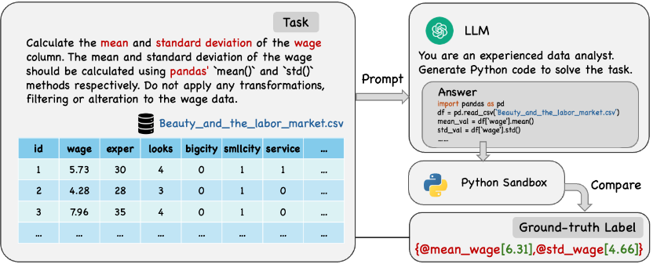
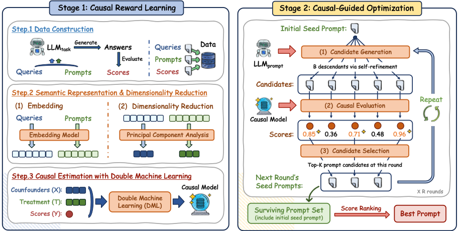
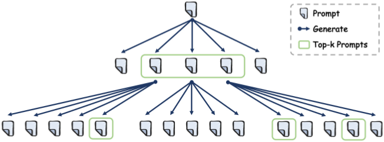
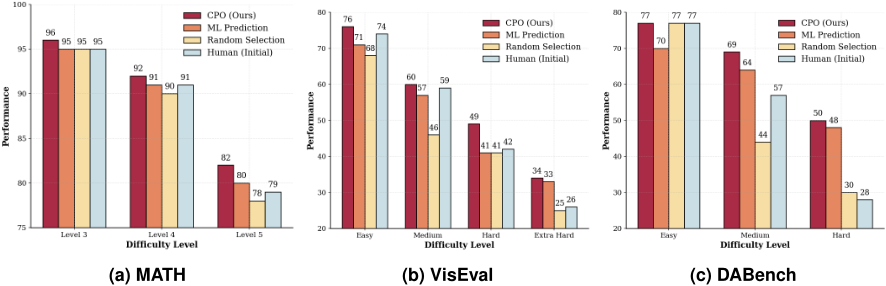
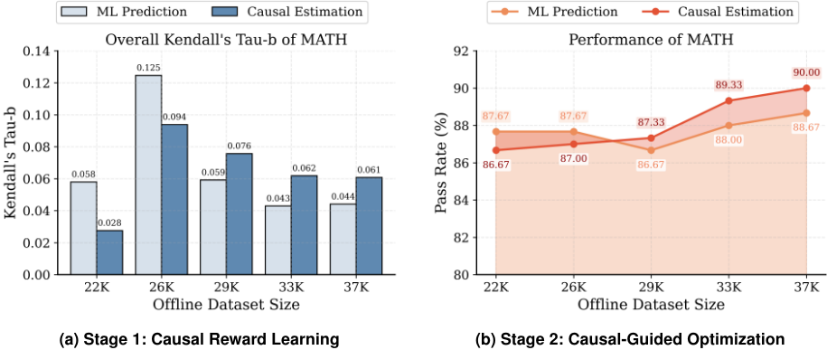
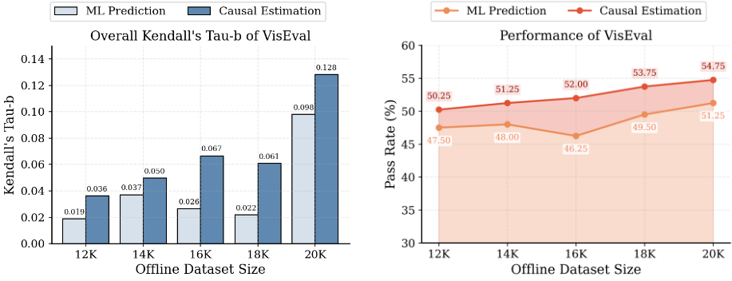
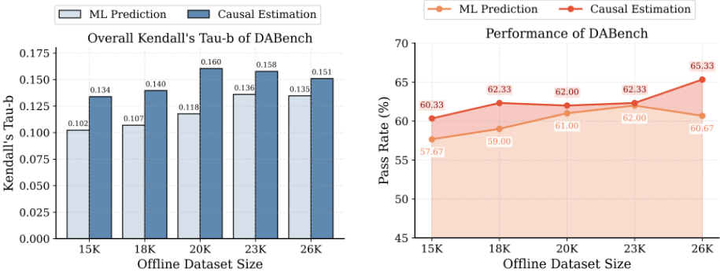
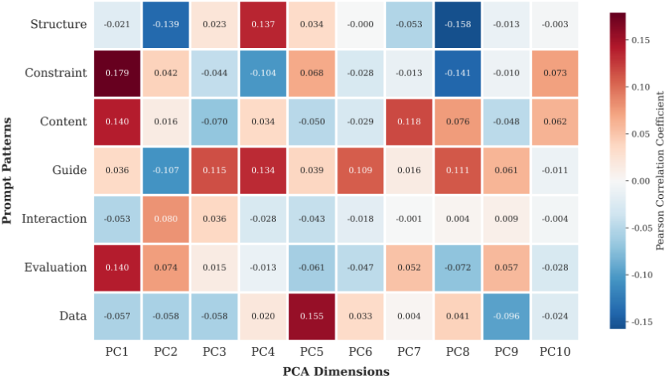

优化 LLM 的提示词：一种因果方法
论文针对 LLM 输出对提示措辞高度敏感、现有 APO 方法要么采用静态'一刀切'提示、要么依赖混淆了查询难度与提示真实效果的相关性奖励模型这一痛点，提出 Causal Prompt Optimization（CPO）。方法分两阶段：第一阶段用 Double Machine Learning（DML）对 prompt/query 的 PCA 语义嵌入做正交化，从历史 ⟨query, prompt, score⟩ 数据中学习离线因果奖励模型，估计提示变体相对基线提示的 CATE；第二阶段以该奖励驱动轻量级树搜索，为每个查询低成本地选优提示。在 MATH、VisEval、DABench 三个基准上，CPO 整体准确率分别达 90.00%、54.75%、65.33%，全面超过人工提示与 APE、OPRO、PromptBreeder、TextGrad 等自动优化器，且在困难查询子集上优势最明显；因果奖励模型在未见查询/提示上的 Kendall's tau-b 排序一致性较非因果基线提升 12%-38%，并随离线数据积累持续改善。经济分析显示其把重评估成本转为一次性固定投入，7 次 LLM 调用即可生成 35 个候选提示，实现低成本按查询定制。
现有 Automatic Prompt Optimization（APO）面临两个持续挑战：一是常用的静态提示策略在平均意义上表现好但无法适应异构查询；二是查询级动态方法依赖的离线奖励模型本质上是相关性的，会把提示效果与查询特征（如内在难度、领域复杂度）混淆，导致优化器在探索新提示或遇到偏离训练分布的查询时被虚假相关性误导。论文要解决的核心问题是：如何在不访问模型内部参数的黑盒设定下，可靠地估计提示的真实因果效果，并以低成本实现查询级（per-query）提示优化。
CPO 两阶段框架。Stage 1（Causal Reward Learning）：构造 ⟨query, prompt, score⟩ 三元组离线数据（系统变化约束、指令风格、few-shot 示例等维度，并设定无 few-shot 的基线提示 t0 作为对照）；用 sentence-transformer（nomic-embed-text-v1.5）将查询与提示编码为稠密嵌入，再经 PCA 降维得到连续'潜在处理'表示；采用 DML（CausalForestDML，GradientBoosting 估计 outcome/treatment 两个 nuisance 函数，cross-fitting 防过拟合，Generalized Random Forest 估计异质处理效应），通过残差化把提示语义效应从查询基线难度中正交分离，得到无偏的 CATE 估计作为因果奖励。Stage 2（Causal-Guided Optimization）：以因果奖励为离线 reward，从种子提示出发用轻量 LLM_prompt 迭代树搜索生成候选变体（含自改进指令），按估计处理效应排序保留 top-K，避免逐候选调用任务执行 LLM 的高昂在线评估成本。
因果奖励模型在未见查询/提示上的 Kendall's tau-b 较非因果 ML 基线：MATH 从 0.0441 提升至 0.0608（+38%），VisEval 从 0.0980 提升至 0.1283（+31%），DABench 从 0.1347 提升至 0.1509（+12%）
MATH 测试集整体准确率 90.00%（所有方法中最高），最难的 Level 5 子集达 82%（与 APE 并列第一）
VisEval 测试集整体准确率 54.75%，以明显优势超过所有基线，且在各难度层级上保持稳定
DABench 整体准确率 65.33%，超过最强自动基线 PromptBreeder 的 62.33%；Hard 子集达 50%，显著高于其他方法的 25-42%
消融实验：MATH Level 5 上 CPO 82% vs 同架构 ML 预测变体 80%；纯随机选择变体在 DABench Hard 仅 44%，低于人工初始提示的 57%
数据规模实验：MATH 上离线数据达 29K 后 CPO 的 Kendall's tau-b 稳定在 0.061-0.076，非因果基线降至 0.043-0.059，且 Stage 2 优化性能随数据量持续上升而 ML 基线波动或下降
成本结构：默认参数下仅 7 次 LLM_prompt 调用即可生成 35 个候选提示；静态基线方法单次优化约需 5,000-10,000 次 LLM 调用
PCA 潜在处理有效性验证：PC1 与 Constraint 模式相关 ρ=0.179、与 Content ρ=0.140，PC4 与 Structure ρ=0.137
区别于以相关性信号训练奖励模型的动态方法（如 Prompt-OIRL、QPO、TRPrompt）和任务级静态优化（APE、OPRO、PromptBreeder 等），论文首次将提示优化形式化为因果估计问题：把提示视为 treatment、模型性能视为 outcome，用 PCA 降维后的语义嵌入作为连续'潜在处理'，通过 DML 正交化分离提示效应与查询难度等混杂因素，以 CATE 作为无偏奖励信号。这把因果机器学习从结构化商业干预扩展到 NLP 提示优化领域，同时把评估成本从昂贵的在线 LLM 调用转为离线因果模型，重构了提示优化的固定投入-边际成本结构，使动态按查询定制在经济上可行。
相关度级别：high
命中能力域：3.2 提示工程 | 3.5 评测与可靠使用
理由：直接命中 3.2 提示工程：论文核心就是自动提示优化（APO）与查询级自适应提示，属于团队'提示的设计与优化、提示词资产管理'的核心技术栈，且明确对比了 DSPy、PromptBreeder、TextGrad、APE、OPRO 等团队可能已在用或评估过的工具。同时命中 3.5 评测与可靠使用：论文提供了奖励模型质量的验证方法（Kendall's tau-b 排序一致性、因果 vs 非因果消融）、困难查询上的鲁棒性分析，以及完整的成本-效率经济分析（固定投入 vs 边际成本），与团队'产出质量与可靠性的评测保障、成本与效率优化'关注点高度契合。对团队不涉及模型训练的定位也友好：CPO 只用现成 LLM + 离线统计模型，无需微调。
建议动作：深入精读并做内部分享
arXiv:2602.01711v1 [cs.AI] 2026年2月2日
康涅狄格大学商学院，美国康涅狄格州斯坦福德，weichen@uconn.edu
上海交通大学安泰经济与管理学院，中国上海，yibo_fang@sjtu.edu.cn
康涅狄格大学商学院，美国康涅狄格州斯托斯，mlp24004@uconn.edu
康涅狄格大学商学院，美国康涅狄格州斯坦福德，fasheng.xu@uconn.edu
上海交通大学安泰经济与管理学院，中国上海，weix@sjtu.edu.cn
摘要：大语言模型（LLMs）正日益嵌入企业工作流，但其性能仍对提示设计高度敏感。自动提示优化（APO）旨在缓解这种不稳定性，但现有方法面临两个长期存在的挑战。首先，常用的提示策略依赖于静态指令，这类指令在平均意义上表现良好，却无法适应异构的查询。其次，更具动态性的方法依赖于本质上仅具相关性的离线奖励模型，将提示的有效性与查询特征相互混杂。我们提出因果提示优化（CPO），这是一个将提示设计重新表述为因果估计问题的框架。CPO 分两个阶段运行。第一阶段，它通过对提示与查询的语义嵌入应用双重机器学习（DML）来学习一个离线因果奖励模型，从而将提示变化的因果效应与起混杂作用的查询属性分离开来。第二阶段，它利用这一无偏的奖励信号来引导资源高效的搜索，以获得针对特定查询的提示，而无需依赖代价高昂的在线评估。我们在数学推理、可视化与数据分析领域的基准测试（benchmark）上对 CPO 进行评估。CPO 始终优于人工设计的提示和最先进的自动优化器。这些增益主要源自困难查询上鲁棒性的提升，而现有方法在这类查询上往往表现退化。除性能之外，CPO 从根本上重塑了提示优化的经济学：通过将评估从实时模型执行转移到离线因果模型，它能够以在线方法所需推理成本的一小部分实现高精度的逐查询定制。这些结果共同确立了因果推断可作为企业 LLM 部署中可靠且高成本效益提示优化的可扩展基础。
关键词：大语言模型（LLMs），因果提示优化（CPO），自动提示优化，因果推断，查询自适应提示，双重机器学习（DML），AI 系统设计
大语言模型（LLMs）正被快速整合以支持企业工作流程，例如财务报告、客户支持和市场分析，这已从根本上改变了管理决策的格局 (e.g., Eloundou et al., 2024; Zhao et al., 2024; Chen and Chan, 2024; Zhou and Lee, 2024; Brynjolfsson et al., 2025)。在这些高风险的场景中，以自然语言形式向 LLMs 发出的指令，即“提示”（prompts），是组织用以明确目标、施加约束和管理风险的主要接口 (Brown et al., 2020; Radford et al., 2019)。然而，LLMs 经常会对提示在措辞或结构上的细微变化表现出敏感性，导致输出质量出现巨大且往往不可预测的差异 (Li and Liang, 2021; Liu et al., 2023)。这种脆弱性迫使从业者依赖大量的人工调优来确保性能。因此，当前主流的提示工程实践仍然高度依赖人力，依靠临时性的启发式方法和人工试错，这些方法在规模化时成本高得难以承受，且难以在异构的业务任务之间实现标准化 (Zhou et al., 2022; Reynolds and McDonell, 2021)。
为了克服这些低效问题，该领域已转向自动提示优化（APO），即一种无需访问 LLM 内部参数 1 即可自动改进提示的方法 (Cheng et al., 2024; Pryzant et al., 2023)。大多数 APO 实践主要聚焦于任务级优化，旨在为某一任务类别的给定数据集发现一个在平均意义上表现良好的单一静态提示 (e.g., Zhou et al., 2022; Pryzant et al., 2023)。然而，这种“一刀切”的范式往往未能考虑到任务类别中各个查询的多样性，因为适用于某一查询的提示在另一查询上可能表现欠佳。因此，近期的进展已转向查询级优化，即为特定的输入实例动态定制提示以最大化性能 (Kong et al., 2025)。至关重要的是，这种细粒度优化的成败取决于一个可靠的奖励模型（reward model），即一种无需实际调用 LLM 就能准确估计提示在特定查询上质量的机制。
当前查询级优化的一个关键缺陷在于，现有的奖励模型从根本上依赖于相关性信号。无论是在历史日志还是离线数据集上训练，这些模型通常都是通过观察某个提示在某一任务类别内特定查询集合上的表现来推断其有效性。然而，这类信号不可避免地将提示的内在效应与查询背后（往往未被纳入考量）的特征相混淆 2。例如，在较简单查询上被不成比例地测试过的提示会显得比实际更好；而在较难查询上使用的提示则显得更差。其结果是，当优化器探索新提示或遇到偏离训练分布的查询时，这些基于相关性的奖励往往会失效，引导系统走向那些在历史数据中看似最优、却因虚假相关而在实践中无法泛化的提示。
因果框架为摆脱这种不可靠性提供了一条有原则的途径。究其核心，可靠的提示评估需要回答一个因果问题：如果在保持底层查询不变的情况下改变提示，模型性能将如何变化？回答这一问题需要将提示变体的处理效应从起混淆作用的任务异质性（例如内在任务复杂度或特定领域结构）中分离出来（Imbens and Rubin, 2015）。若缺乏这种因果上的分离，企业便无法可靠地辨别性能提升究竟归功于更优的提示，还是仅仅源于更简单的任务实例，从而导致自动化工作流中的次优决策。
1 鉴于在商业环境中通过 API 访问的专有模型（例如 OpenAI 的 GPT、Anthropic 的 Claude 或 Google 的 Gemini）十分普遍，我们专门聚焦于黑盒提示设计——在这种设定下，提示完全在自然语言空间中进行改进，而无法访问大语言模型（LLM）的内部梯度或权重。
2 此处的混淆因素是指诸如内在任务难度或领域复杂度之类会影响结果、但并非由提示本身引起的变量。
3
为了将这一因果视角付诸实践，我们提出因果提示优化（Causal Prompt Optimization, CPO），这是一个用于估计并利用提示中语义变化的因果效应的框架。CPO 首先将查询和提示映射到一种结构化的语义表示中，该表示能够捕捉有意义的语言学特征与查询级特征（Ellickson et al., 2024）。基于这一表示，该框架利用现代因果机器学习中的技术，具体而言是双重机器学习（DML）（Chernozhukov et al., 2018; Wager and Athey, 2018; Shi et al., 2025），来估计提示语义变化对模型性能的条件平均处理效应（CATE）。通过将提示语义与查询特征显式分离，CPO 构建出一个因果奖励模型，该模型捕捉的是对提示的干预如何因果地影响结果，而不仅仅是它们与历史使用模式如何相关。这一因果表述的一个关键含义在于，它基于估计的处理效应在诸提示之间诱导出一种良定义的排序。这进而回答了一个在恰当评估下的核心实证问题：如果模型基于估计的因果效应预测提示 A 将优于提示 B，那么在未见过的查询和提示实例上进行评估时，这一预测是否真的成立？
在因果奖励模型的基础上，CPO 利用该模型来引导对更优提示策略的可扩展搜索。这种以优化为驱动的因果估计使用方式自然地回答了我们的第二个问题：通过因果引导的优化所发现的提示，相对于现有的自动提示优化（APO）方法，能否带来系统性的性能提升？CPO 不通过实际查询 LLM 来评估每个候选提示，而是在优化过程中利用估计得到的因果奖励模型对候选进行评分。这使得能够对提示设计空间进行广泛且计算高效的探索。搜索过程包含一个用于生成候选改进的结构化机制，该机制借助 LLM 自身的语义精炼能力，并使用因果奖励模型对每个候选进行评估。通过将优化锚定于因果估计而非原始相关性或昂贵的在线评估，CPO 所识别出的提示能够在异构且此前未见过的查询上更可靠地泛化。
我们在三个异构且与业务相关的基准测试（benchmark）上对 CPO 进行了评估，即数学推理（MATH）、可视化（VisEval）和数据分析（DABench），以考察其在多样化查询特征（例如结构和难度特征）下的有效性。在所有设置下，CPO 所识别出的提示均优于人工设计的基线、诸如 Reflexion（Shinn et al., 2023）一类的传统提示方法，以及诸如 PromptBreeder（Fernando et al., 2024）和 TextGrad（Yuksekgonul et al., 2025）一类的最先进自动优化器。该框架在每个基准测试上都取得了最高的总体准确率，并在最具挑战性的子集上保持了尤为强劲的性能，例如复杂数学问题以及高难度的可视化与数据分析查询——在这些场景中，现有的相关性方法通常会表现退化。除了最终的优化性能之外，CPO 底层的中间因果奖励模型与真实提示排序的吻合度也显著强于非因果预测模型。在未见过的查询和提示上进行测试时，因果估计器始终与真实结果表现出更高的一致性，这表明它捕捉的是稳定的因果关系，而非历史日志中的虚假相关。这些发现表明，CPO 能够有效发现高性能提示，其主要依赖的奖励信号能够在新的异构查询和提示上可靠地泛化。
4
一系列进一步的分析进一步验证了 CPO 实现性能提升的机制。消融实验表明，在保持所有其他组件不变的情况下，将因果奖励替换为非因果预测模型会显著降低优化性能，尤其是在困难查询上。这表明，CPO 的改进源于其将提示效应与查询特征分离开来的能力，而非源于模型架构或搜索过程的差异。额外的验证证实，CPO 中使用的潜在处理表示具有语义意义：从提示嵌入中提取的主成分与诸如约束严格性、结构框架和引导风格等可解释的提示设计模式系统性地对齐。最后，CPO 在离线数据不断积累的情况下表现出良好的扩展行为。随着数据量的增长，因果奖励模型在排序准确率和优化性能两方面均呈现出持续的改进，而预测性基线则出现波动或下降。这一模式表明历史数据具有递增回报——对于其 LLM 系统持续积累交互日志的企业而言，这是一个重要的运营考量。
这些实证发现支撑了三项贡献。第一，我们将提示工程概念化为一个因果估计问题，从而有别于以往工作中普遍采用的基于相关性的范式。我们指出，标准的相关性奖励信号本质上会将提示的内在功效与难度等混淆因素混杂在一起。通过对这种混淆偏倚进行形式化，我们确立了分离语义变化的因果处理效应对于确保优化可靠性的必要性。第二，我们开发了一个方法论框架，通过在语义嵌入上应用双重机器学习（DML）来实现这一因果视角。通过将提示特征相对于查询特征进行正交化，我们的方法构建了一个对虚假相关具有鲁棒性的因果奖励模型。这一设计使我们的方法能够瞄准提示所带来的真实增值，而非依赖可能无法泛化的历史关联。第三，与静态的任务级方法相比，我们展示了动态的、查询级自适应在运营与经济层面的价值。通过以在线模拟成本的一小部分实现高精度的提示定制，CPO 解决了可扩展性瓶颈，这一瓶颈长期以来将企业限制在静态的、
5
“一刀切”式提示。这种动态能力不仅提升了在异构且复杂任务上的鲁棒性，还将积累的交互数据转化为日益强大、更具自适应性的提示优化方法。
综上所述，这些贡献旨在推动基于 LLM 的运营中的提示设计从临时性的实验走向更加系统化、数据效率更高的实践。CPO 并非提供又一种编写提示的启发式方法，而是提供了一个框架，用于学习提示特征如何影响异构查询上的性能，并利用这一理解在现实的预算与部署约束下设计更优的提示策略。总而言之，CPO 为提示优化建立了一个有原则且立足实际运营的基础，为下一代 AI 赋能的组织系统提供了所需的可靠性与效率。
我们的研究位于提示工程、自动化优化与因果机器学习的交叉领域。随着大语言模型（LLM）在组织工作流程中日益占据核心地位，信息系统领域的文献已强调需要系统化的框架来设计可靠且稳健的 AI 系统（Rai, 2024; Susarla et al., 2025; Yoo et al., 2024）。在这一更宏大的议程中，我们特别聚焦于提示优化这一挑战——即如何通过自然语言指令系统地控制 LLM 的行为。我们对这些研究脉络进行回顾，以将因果提示优化（CPO）定位为不仅仅是一种算法上的改进，更是针对现有自动化提示优化（APO）方法在运营与经济层面根本局限性的一种战略性回应。
为克服人工提示工程的局限性，该领域已朝着自动提示优化（Automated Prompt Optimization, APO）方向发展。这一框架将提示设计重新表述为离散文本空间中的计算搜索问题（Pryzant et al., 2023; Cheng et al., 2024），旨在系统地识别最优提示。然而，在这一非结构化文本空间中进行搜索面临着不同于传统数值优化的独特挑战。搜索空间是离散的且在语义上是非线性的；微小的文本改动可能引发不成比例且不可预测的性能变化，缺乏可用于引导改进的稳定方向性信号（Liu et al., 2023）。为应对这种复杂性，大多数 APO 系统遵循迭代的“生成—评估—过滤”流水线：它们从种子提示（seed prompts，由人工指定或由大语言模型（LLM）生成）出发，在文本空间中产生变体（通过重写规则、变异算子或 LLM 提议），并利用某种反馈奖励对候选提示进行筛选。为在这一复杂搜索空间中导航，这些系统依赖于从贪心选择到进化启发式方法等一系列成熟的搜索策略（Ramnath et al., 2025）。我们从经济与运营的视角对这些方法加以分类，将其划分为静态（Static）方法与动态（Dynamic）方法。
2.2.1. 静态方法：任务级提示优化
主导范式以 APE（Zhou et al., 2022）、OPRO（Yang et al., 2023）和 PromptBreeder（Fernando et al., 2024）等方法为代表，其目标是找到一个单一的通用提示，使其在整个任务或数据集上的平均性能最大化。这些方法利用 LLM 生成候选提示——或通过对示例（demonstrations）进行逆向工程（Zhou et al., 2022），或通过迭代变异种子指令（Cui et al., 2024; Yang et al., 2023）——并使用束搜索（beam search）、蒙特卡洛树搜索（Monte Carlo tree search）或老虎机（bandit）等启发式搜索算法对其进行过滤（Pryzant et al., 2023; Wang et al., 2024; Wu et al., 2024）。至关重要的是，评估候选提示需要在训练数据上进行大量验证，这使得评估过程成为主要的成本驱动因素，并将提示优化变成一笔庞大的固定前期投资。然而，一旦最优提示被锁定，部署的边际成本便很低，因为同一个静态提示会被重复用于所有后续查询。
尽管静态方法在部署方面具有经济吸引力，但它内在地假设单一提示即可满足多样化查询的需求。在以异构或“长尾”（longtail）查询为特征的复杂业务环境中，这种策略往往会产生次优结果。通过强制采用“一刀切”（one-size-fits-all）的解决方案，静态优化在本质上牺牲了困难边缘案例上的性能，以换取对平均情况的优化（Sun et al., 2024）。
2.2.2. 动态方法：查询级提示优化
为了解决任务类别内部的查询异质性问题，近期的方法试图实现动态方法，以细粒度针对单个查询定制提示。与冻结单一提示的静态方法不同，动态方法旨在学习一个映射函数（通常参数化为策略模型），为特定查询生成具备上下文感知能力的提示。已有文献通过强化学习（Reinforcement Learning, RL）或监督微调训练专用优化模型来实现这种适配。例如，TRPrompt（Nica et al., 2025）等方法利用文本反馈对预训练模型进行微调，而 Prompt-OIRL（Sun et al., 2024）和 QPO（Kong et al., 2025）等框架则采用离线逆强化学习。这些方法首先从历史日志中学习奖励函数，随后训练策略模型以最大化该推断出的奖励，从而实现个性化适配。
然而，依赖学习得到的策略模型会带来重大挑战，其主要原因在于用于训练这些模型的奖励信号本身存在缺陷。为了避免在线仿真难以承受的延迟，动态方法通常依赖离线奖励预测器。然而，这些标准预测器基于相关性信号来最小化预测误差，无法将提示的内在有效性与潜在的混杂因素（例如查询本身的固有难度或领域复杂度）解耦。例如，某个提示可能仅仅因为历史上被应用于简单查询而获得高分，这会导致模型学习到虚假相关性（例如偏好特定关键词或特定长度），而非真正的推理模式（Deng et al., 2022）。这种“相关即因果”的谬误会产生不稳定的信号，从而误导优化器。当策略模型在这些混杂信号上训练时，它学会的是利用“捷径”而非因果机制，由此得到的策略十分脆弱，需要持续重新收集数据并重新训练才能适应新颖或困难的查询。这一局限性凸显了对一个能够进行严格因果估计的框架的迫切需求，以指导鲁棒的优化。
8
我们的方法论基础源自因果机器学习，特别是高维场景下异质处理效应（HTE）的估计。尽管传统机器学习模型是捕捉复杂关系的强大工具，但它们通常是为预测（即利用相关性）而非有效干预（即估计无偏效应）而优化的（Wager and Athey, 2018; Athey et al., 2019）。这一区别在提示优化中至关重要，因为其目标不仅是预测某个提示的得分，而是估计更改提示所带来的因果增益。
为应对这一挑战，我们采用双重机器学习（DML）框架（Chernozhukov et al., 2018）。DML 的关键创新在于正交化（orthogonalization）：通过利用灵活的机器学习模型来估计冗余参数（例如查询的基线难度），DML 能够有效地将高维混杂因子的影响从处理中分离或剔除。即使底层数据生成过程表现出复杂的混杂，这也能实现无偏推断。
凭借其鲁棒性，因果机器学习已被证明在解决商业问题方面极具价值（Hünermund et al., 2022; Ellickson et al., 2024）。特别是，DML 已被成功应用于从环境噪声中分离出战略性干预的因果影响。例如，Ellickson et al. (2023) 将该框架应用于估计定向电子邮件促销的异质效应，具体展示了内容、表述框架和个性化方面的变化如何在营销漏斗的各个阶段因果地影响消费者参与度与转化。类似地，More et al. (2023) 利用该框架估计数百项客户行动的因果影响，在实现商业应用中大规模因果推断的同时，取得了更高的准确率和计算效率。在营销场景之外，因果机器学习已被证明对于理解各类应用中的异质处理效应颇具价值（Leng and Dimmery, 2024）。
CPO 代表了将这一框架向自然语言处理（NLP）领域的一次全新转化。尽管因果推断与 NLP 交叉领域的研究成果日益增多，但现有研究大多聚焦于面向可解释性或公平性的表示学习，例如学习不变表示以消除虚假相关性（Shi et al., 2021），或利用因果嵌入来解释模型行为（Xu et al., 2025）。我们与这一以可解释性为中心的范式不同，将因果推断落地为一种优化引擎。具体而言，我们利用经主成分分析（PCA）降维的语义嵌入作为连续处理变量，来估计提示变体的条件平均处理效应（CATE）。这使我们能够在数学上将提示的附加价值与任务实例的内在难度分离开来，为实现可靠且查询自适应的提示自动化提供了所必需的严格统计基础。
9
在本节中，我们介绍因果提示优化（CPO）框架。我们首先将查询级提示优化形式化地定义为一个奖励最大化问题（第3.1节）。随后，我们引入我们的核心方法论创新：将提示设计视为一个因果推断挑战（第3.2节）。该框架分两个不同的阶段进行：阶段1在经PCA降维的语义嵌入上采用双重机器学习（DML）来学习一个因果奖励模型（第3.3节），而阶段2则利用该模型来指导一种资源高效的、基于树的搜索，以寻找更优的提示（第3.4节）。
我们给定一个具有代表性的任务数据集 D task = {( 𝑥 𝑖 , 𝑙 𝑖 )} 𝑁 𝑖 = 1 ，其中每个 𝑥 𝑖 是一个自然语言查询描述（例如一道数学题），𝑙 𝑖 是相应的真实标签（ground-truth）或解答。设 𝐿𝐿𝑀 task 为一个任务执行语言模型，并设 E(· , ·) 表示一个评估函数（例如准确率），它将模型生成的响应和参考答案映射为一个标量性能分数。对于一个代表性查询 𝑥 ∈ X 和提示 𝑡 ∈ T ，其中 X 和 T 分别表示查询空间和候选提示空间，语言模型在查询和提示的共同条件下生成响应 𝐿𝐿𝑀 task ( 𝑥, 𝑡 ) 。该响应与 𝑥 相关联的参考 𝑙 进行评估，得到分数 𝑦 = E ( 𝐿𝐿𝑀 task ( 𝑥, 𝑡 ) , 𝑙 ) ，其中分数越高表示模型输出与真实标签越一致，因而任务性能越好。
图1给出了一个取自 DABench（Hu et al., 2024）的示例，DABench 是我们用于数据分析的实验数据集之一。在该示例中，输入 𝑥 是一个自然语言查询，要求模型计算给定数据集中某一指定列的均值和标准差。相应的标签 𝑙 是从数据中计算得到的均值和标准差的真实数值。给定一个提示 𝑡 ∈ T ，该提示指定模型所扮演的角色并概述额外信息（例如通用的任务求解策略），任务执行模型 𝐿𝐿𝑀 task 生成相应的代码，该代码在沙箱环境中执行以产生输出，随后该输出与相应的标签 𝑙 进行评估。评估函数 E ( 𝐿𝐿𝑀 task ( 𝑥, 𝑡 ) , 𝑙 ) 在均值和标准差均被正确计算时给出分数1，在两个值均不正确时给出分数0，在两个值中恰好有一个正确时给出分数0.5。
我们的目标是找出能为特定查询 𝑥 提供最高分数的提示。形式化地，我们寻找一个使评估分数最大化的提示 𝑡 ∗ ∈ T ：
这一形式化表述体现了一种查询级优化目标，其中最优提示策略会根据查询 𝑥 的具体特征进行调整。为方便起见，主要符号的汇总见附录6。
10

We formulate prompt optimization not merely as a search problem, but as a problem of causal inference . Standard supervised learning often conflates correlation with causation; for instance, 'hard' tasks may inherently lead to lower scores regardless of the prompt, while simultaneously inducing users to attempt more complex prompts. A correlational model might erroneously learn that complex prompts cause lower scores. To resolve this, we view each text prompt as a treatment and the model's performance as the outcome , aiming to isolate the causal effect of the prompt from task-specific confounders.
Let 𝑋 ∈ X denote the query features, and 𝑌 ( 𝑡 ) ∈ [ 0 , 1 ] the evaluation score. Following the potential outcomes framework (Imbens and Rubin, 2015), the potential outcome under prompt 𝑡 ∈ T is defined as:
where 𝑌 ( 𝑡 ) is the score obtained from evaluating the response of query 𝑥 under prompt 𝑡 .
To measure the true effectiveness of a prompt, we define the CATE of a candidate prompt 𝑡 relative to a baseline prompt 𝑡 0:
This quantity 𝜏 ( 𝑥, 𝑡 ) represents the counterfactual gain : how much better the model performs with prompt 𝑡 compared to the baseline 𝑡 0, strictly due to the prompt itself. The objective of query-level optimization is to select the prompt that maximizes this causal effect:
which connects to the empirical prompt-search objective in (1) by replacing the realized evaluation score for a single execution with its counterfactual, feature-conditional expectation and by explicitly accounting for confounding query characteristics. Note that estimating either 𝜇 ( 𝑥, 𝑡 ) or 𝜏 ( 𝑥, 𝑡 ) yields the same optimal prompt, since for a fixed baseline prompt 𝑡 0, arg max 𝑡 𝜏 ( 𝑥, 𝑡 ) = arg max 𝑡 𝜇 ( 𝑥, 𝑡 ) . We adopt the CATE formulation primarily for interpretability: it directly captures the causal improvement of a candidate prompt over a control prompt, while in practice, its estimation complexity and accuracy are essentially identical to those of estimating 𝜇 ( 𝑥, 𝑡 ) directly.
11
Figure 2 illustrates the overall architecture of the Causal Prompt Optimization (CPO) framework, which proceeds in two stages: (1) Causal Reward Learning and (2) Causal-Guided Optimization.

3.3.3. 步骤 3：基于双重机器学习的因果估计 本步骤的目标是估计提示语义 𝑧 对任务性能 𝑌 的因果效应，并允许该效应在由 𝑥 刻画的各查询之间变化。尽管提示的分配是通过实验控制的，但估计仍然具有挑战性，因为 𝑥 和 𝑧 都位于高维语义空间之中。在这类场景下，标准的参数估计量会施加不太可能成立的限制性函数形式假设，而经典的半参数方法则因维度灾难（curse of dimensionality）而变得不可行。为应对这些挑战，我们采用双重机器学习（DML）框架（Chernozhukov et al., 2018），该框架将用于冗余估计（nuisance estimation）的灵活机器学习与正交化估计方程相结合，从而在高维环境中实现有效的因果推断（Shi et al., 2025）。
13
为了在 DML 框架内将这一目标付诸实施，我们在条件均值上施加部分线性结构，假设提示效应通过其嵌入表示以线性形式进入，同时允许相对于查询语义的无约束异质性（Chernozhukov et al., 2018）。这一假设保留了查询特征影响性能方式的灵活性，同时使得在高维处理空间中对提示效应进行正交化估计成为可能。
在该结构下，DML 引入冗余函数（nuisance functions）来概括结果与处理如何随 𝑥 变化：
其中，𝑚(𝑥) 表示由查询特征所隐含的基线性能水平，而 𝑒(𝑥) 刻画查询特征与连续处理表示之间的系统性依赖关系。由于这两种关系在高维嵌入空间中可能高度非线性，我们使用灵活的机器学习方法（Gradient Boosting）来估计 𝑚(·) 和 𝑒(·)，而不是施加参数化限制。
为防止第一阶段的过拟合使因果估计产生偏差，我们按照 Chernozhukov et al. (2018) 的规定实施交叉拟合（cross-fitting）。具体而言，我们将数据划分为 𝐾 折。对于每一折 𝑘，我们使用其余 𝑘 - 1 折来估计冗余函数，并为第 𝑘 折生成样本外预测，从而确保后续残差使用交叉拟合预测来构建。
在操作层面，正交性通过使用交叉拟合的冗余估计对结果与处理同时进行残差化来实现：
这一步骤将提示信号相对于查询信号进行正交化。例如，如果某个查询本身就很困难，𝑚(𝑥) 将预测出较低的分数；因此，残差 ˜𝑌 便分离出了专门归因于提示变化的超额性能，而与查询的基线难度无关。
14
（3）条件平均处理效应（CATE）估计 正交化之后，我们利用 DML 所隐含的部分线性结构来估计异质性处理效应。具体而言，正交化后的结果变量满足
其中 𝜃 ( x ) 表示作为查询特征函数的条件平均处理效应。这一设定在处理变量上保持线性，同时允许处理效应在语义查询空间中灵活变化。
我们使用广义随机森林（Generalized Random Forest）(Athey et al., 2019) 来估计 𝜃 ( x )，该方法非常适合在高维环境中学习异质性系数。由于估计方程对冗余函数（nuisance functions）满足 Neyman 正交性，所得估计量对第一阶段冗余估计中的正则化偏差保持局部不敏感。
因此，估计得到的条件平均处理效应由下式给出
该式给出了一个稳健且去偏的奖励信号，用于指导第二阶段的优化。
在第二阶段，我们利用估计得到的因果效应 ˆ 𝜏 ( 𝑥, 𝑡 ) 作为用于提示优化的离线奖励函数。这一设计将繁重的提示评估工作负载——否则需要反复调用任务执行 LLM（即 𝐿𝐿𝑀 task）——转移给一个离线因果奖励模型，作为一次性固定投入，从而在提示搜索过程中仅留下轻量的边际成本。由此，我们直接解决了标准 APO 方法的主要经济瓶颈，即其开销随提示评估次数线性增长。
利用这一离线奖励，我们通过迭代式树搜索过程进行提示搜索（图 3）：
（1）候选生成：从一组种子提示（第一轮中的基线提示 𝑡 0）出发，生成器模型 𝐿𝐿𝑀 prompt——通常比任务执行模型更为轻量——生成 𝐵 个候选变体，其中 𝐵 表示每个提示所生成的变体数量。为促进有意义的探索，我们在生成提示中嵌入了一条显式的自我改进指令（例如，“基于种子提示开发更优的提示”）。这鼓励模型提出在语义上有所改进的提示，而非表面上的改写，从而能够探索提示空间中质量更高的区域。图 4 展示了数学推理任务中所使用的模板（该任务的更多细节见第 4.1.1 节），该模板由以下部分组成：（1）定义生成目标与风格的系统提示，其中包含自我改进指令；（2）引导推理的指令块与示例块；（3）指定新候选提示数量与格式的用户提示。
15
这一方法有效地将探索与执行解耦。通过轻量级因果奖励模型对数千个候选进行评估，CPO 能够以在线方法（例如 LLM-as-a-Judge）成本的一小部分对语义空间进行深度探索。此外，由于该奖励是显式因果性的而非相关性的，由此得到的提示选择对查询异质性和分布偏移更为鲁棒，从而产生能够泛化到特定评估样本之外的提示。

4.1.1. Benchmark Datasets To comprehensively evaluate the proposed CPO framework, we conduct experiments on three diverse tasks, including mathematical reasoning, natural language to visualization generation, and data analytics. For each task, we select a corresponding typical benchmark dataset: MATH(Hendrycks et al., 2021) for mathematical reasoning, VisEval (Chen et al., 2024) for natural language to visualization generation, and DABench (Hu et al., 2024) for data analytics. See the detailed descriptions and the evaluation metrics (e.g., accuracy and pass rate) of the benchmarks in the Appendix EC.2.
4.1.2. Offline Data Construction As outlined conceptually in Section 3.3.1, we construct offline datasets of ⟨ query, prompt, score ⟩ triplets to enable causal estimation in Stage 1 of CPO. The data-collection pipeline follows a unified procedure across all three benchmarks while allowing task-specific adaptations. Table 1 summarizes the dataset statistics.
17
| Task | #Queries | #Prompts | #Instructions | #Examples | #Triplets |
|---|---|---|---|---|---|
| MATH | 185 | 201 | 116 | 29 | 37,185 |
| VisEval | 102 | 201 | 30 | 64 | 20,502 |
| DABench | 164 | 160 | 10 | 3 | 26,240 |
| Task | #Queries | #Prompts | #Instructions | #Examples | #Triplets |
For the MATH and VisEval datasets, each prompt consists of two elements: an instruction and a set of few-shot examples . We begin with the baseline prompt 𝑡 0 and expand the prompt pool in a binary-tree manner. Specifically, we use 𝐿𝐿𝑀 prompt to generate two new variants from the initial prompt ( 𝑡 0); then, for each newly generated prompt, we again generate two variants, and repeat this process recursively. During this process, the model is required to preserve the original intent while varying linguistic style, structural framing, and explanatory tone, thereby producing diverse yet semantically aligned instructions. Few-shot examples are query-answer pairs randomly sampled from the benchmark, combined to form multiple demonstration sets. Pairing distinct instructions with these examples yields a large collection of complete prompts. We also designed a baseline prompt 𝑡 0 for each task to anchor the CATE estimation, which is a simple instruction that does not include any few-shot examples. For example, for the MATH dataset, the baseline prompt is 'Solve the following math problem." The details of the baseline prompts are shown in Appendix EC.3.1. For each ⟨ query, prompt ⟩ pair, we use 𝐿𝐿𝑀 task (i.e., Qwen2.5-14B) to generate an answer, which is subsequently evaluated to obtain the performance metric. This process yields a comprehensive offline dataset of ⟨ query, prompt, score ⟩ triplets for each task.
对于 DABench 数据集，我们遵循类似的流程，但针对其数据分析特性引入了两种额外的提示变化类型。首先，DABench 中的每个查询都包含会影响求解方法或输出格式的显式约束，因此我们将这些约束的纳入与否视为提示变化的一个维度。其次，由于任务需要引用外部数据表，我们为每个数据集创建了标准化的 JSON 描述，其中包含列名、数据类型、极值和代表性取值等元数据。该 JSON 上下文的包含与否构成了另一个设计维度。此外，我们设计了三个少样本（few-shot）问题求解示例，每个示例均配有相应的数据集、正确的代码实现和预期输出。提示在两种配置下生成：(1) 单样本（one-shot）设置，随机纳入单个示例；(2) 三样本（three-shot）设置，嵌入全部三个示例。这一流程确保了提示在复杂度和信息量上的多样性。同样地，我们为该任务设计了一个基线提示，如附录 EC.3.1 所报告。
18
为验证所提出的 CPO 框架的可靠性与实用价值，我们设计了一套验证策略，对 CPO 的两个阶段均进行评估：(1) 因果奖励模型估计无偏且可泛化的处理效应（treatment effect）的能力；(2) 在实践中利用这些因果奖励来指导提示优化的有效性。
4.2.1. 阶段 1：验证因果奖励学习
第一阶段评估因果估计量 ˆ 𝜏 ( 𝑥, 𝑡 ) 能否比非因果预测器更准确地恢复真实的处理效应。它回答了我们的第一个研究问题：如果我们的模型预测提示 A 会优于提示 B，那么在未见过的查询和提示上进行检验时，这一预测是否确实成立？具体而言，我们着重评估所估计的因果效应能否在先前未见过的查询和提示上保持可泛化性。为此，取自上述三个基准测试（benchmark）的每个离线数据集均被划分为不同的训练集与验证集。因果奖励模型与非因果奖励模型均使用训练集进行训练，随后在验证集上评估其性能。这一评估设计至关重要，因为在我们的因果建模框架中，提示对应于处理（treatment），而问题则充当潜在的混杂因素（confounder）。在未见过的提示和查询上取得稳健表现，表明因果模型成功分离出提示对模型性能的真实因果贡献，从而确保在观测数据之外实现可靠泛化。相较于非因果机器学习（ML）基线的显著提升证实，因果奖励学习能够提供更可靠、更可泛化的效应估计。
为实现公平比较，我们引入了一个非因果 ML 基线，该基线采用与我们的 DML 估计量相同的底层机器学习架构，但在训练时不进行因果调整。该基线直接根据拼接后的提示与查询嵌入来预测任务结果，纯粹关注预测准确性。相比之下，基于 DML 的因果估计量显式地将处理与混杂因素分离开来，并估计其条件效应，从而得到提示影响的无偏度量。因此，对这两个模型进行比较，即可分离出因果推理对所学奖励信号的可靠性与可泛化性的独特贡献。
我们使用 Kendall's tau-b 来评估因果效应估计的质量。Kendall's tau-b 是一种基于秩的统计量，用于衡量估计的因果效应与留出数据中真实因果结果之间的序数一致性（Agresti, 2010）。这一指标尤为合适，因为后续的提示优化依赖于根据估计效应对候选提示进行排序，这使得秩的一致性比绝对准确性更为重要。我们采用 Kendall's tau-b 而非传统的 Kendall's tau，因为它能恰当地处理并列排名（Agresti, 2010）——这种情况在我们的设定中十分常见，即多个提示-查询对的真实效应可能完全相同（例如，性能得分为 1 或 0）。通过对这类并列情况进行校正，Kendall's tau-b 提供了一种稳健且无偏的排名质量度量，即使许多样本共享相同的真实结果，也能确保公平比较。Kendall's tau-b 的计算细节参见附录 EC.4。
19
4.2.2. 阶段 2：验证因果引导的优化
第二阶段考察将 ˆ 𝜏 ( 𝑥, 𝑡 ) 用作奖励函数是否能在提示优化中带来
我们将 CPO 与三类基线方法进行比较。第一类是普通人工提示（在我们的设定中为基线/对照提示），代表标准的人工编写指令，作为典型提示工程实践的基线。第二类是传统提示方法，包括思维链（Chain-of-Thought, CoT）（Wei et al., 2022）和 Reflexion（Shinn et al., 2023），二者均通过引入显式的中间步骤或迭代式自我反思机制来增强推理能力。第三类包括自动化提示优化方法，例如 APE（Zhou et al., 2022）、OPRO（Yang et al., 2023）、PromptAgent（Wang et al., 2024）、PromptBreeder（Fernando et al., 2024）、TextGrad（Yuksekgonul et al., 2025）以及 DSPy（Khattab et al., 2023）。这些方法旨在寻找一个能够在整个数据集上泛化的单一优化提示。与这些自动化提示优化技术相比，CPO 以查询表示和提示表示为条件，生成针对特定查询的优化提示。这一设计能够对查询异质性进行细粒度适配，并在多样的输入分布上实现更优的泛化能力。这些基线方法的实现细节，包括优化超参数和最终优化得到的提示，见附录 EC.3。
按照第 4.2.1 节所述的验证设计，我们在未见过的查询或提示上评估模型性能。对于 CPO 中的因果估计器以及第 4.2.1 节引入的非因果机器学习（ML）基线，我们报告了全部三个任务上的 Kendall's tau-b 分数，如表 2 所示。
在全部三个基准测试（benchmark）上，CPO 中的因果奖励模型始终取得比非因果 ML 基线更高的 Kendall's tau-b 分数，这表明因果奖励学习能够对提示效果给出更可靠、更具泛化性的估计。具体而言，CPO 的因果估计器在 MATH 上将 Kendall's tau-b 从 0.0441 提升至 0.0608（+38%），在 VisEval 上从 0.0980 提升至 0.1283（+31%），在 DABench 上从 0.1347 提升至 0.1509（+12%）。这些结果提供了定量证据，表明所提出的因果奖励模型比纯预测方法更可靠地捕捉了提示变化的真实效果，进一步印证了将因果推断作为提示优化基础的价值。
| Task | Method | Kendall's Tau-b |
|---|---|---|
| MATH | Non-causal ML baseline Causal estimator of CPO | 0.0441 0.0608 |
| VisEval | Non-causal ML baseline Causal estimator of CPO | 0.0980 0.1283 |
| DABench | Non-causal ML baseline Causal estimator of CPO | 0.1347 0.1509 |
| Task | Method | Kendall's Tau-b |
In Stage 2, we design dedicated test datasets for each task to rigorously evaluate the effectiveness of CPO in guiding prompt optimization on previously unseen queries. All test queries are sampled to ensure no overlap with the offline dataset used for causal reward learning, providing a robust basis for assessing generalization. Because each benchmark categorizes queries by difficulty, we construct stratified test sets by sampling across multiple difficulty levels, with an emphasis on higher-difficulty categories to better reflect challenging real-world scenarios. The detailed composition of each test set is summarized in Table 3.
Tables 4-6 report the prompt optimization performance on the MATH, VisEval and DABench test sets respectively, detailing accuracy across each difficulty level as well as the overall performance. As shown in Table 4, CPO exhibits two notable advantages on the MATH benchmark. First, it maintains strong and consistent performance across all three difficulty levels, achieving the highest overall accuracy of 90.00%.
22
| Table 3 Construction Details of Test Sets for Each Task in Stage 2.Task | Table 3 Construction Details of Test Sets for Each Task in Stage 2.Difficulty Levels | Table 3 Construction Details of Test Sets for Each Task in Stage 2.Selection Criteria | Table 3 Construction Details of Test Sets for Each Task in Stage 2.Size |
|---|---|---|---|
| MATH | Levels 3, Level 4, Level 5 | Randomly sample 100 queries from each level | 300 |
| VisEval | Easy, Medium, Hard, Extra Hard | Sample 100 ⟨ NL, VIS ⟩ pairs per level with each VIS unique | 400 |
| DABench | Easy, Medium, Hard | Randomly sample 30 queries from each level | 90 |
| Table 3 Construction Details of Test Sets for Each Task in Stage 2.Task | Table 3 Construction Details of Test Sets for Each Task in Stage 2.Difficulty Levels | Table 3 Construction Details of Test Sets for Each Task in Stage 2.Selection Criteria | Table 3 Construction Details of Test Sets for Each Task in Stage 2.Size |
In contrast, while several automated methods (e.g., APE and PromptBreeder) perform well on individual levels, their results fluctuate across tasks, reflecting less stable generalization. This consistency highlights CPO's robustness and adaptability in mathematical reasoning tasks. Second, CPO attains the top accuracy (82%) on Level 5, the most challenging subset, outperforming all baselines except APE, with which it is tied. This result underscores CPO's effectiveness in handling complex reasoning problems that demand more advanced prompt engineering.
| Type.Type | Method.Method | Accuracy (%) by Difficulty Level.Level 3 | Accuracy (%) by Difficulty Level.Level 4 | Accuracy (%) by Difficulty Level.Level 5 | Overall.Overall |
|---|---|---|---|---|---|
| Human Prompts | Human | 95 | 91 | 79 | 88.33 |
| Conventional Prompting | CoT (1-shot) | 93 | 92 | 74 | 86.33 |
| Conventional Prompting | Reflexion | 90 | 92 | 77 | 86.33 |
| Automated Prompting | APE | 94 | 92 | 82 | 89.33 |
| Automated Prompting | OPRO | 94 | 92 | 79 | 88.33 |
| Automated Prompting | PromptAgent | 95 | 93 | 77 | 88.33 |
| Automated Prompting | PromptBreeder | 92 | 94 | 80 | 88.67 |
| Automated Prompting | TextGrad | 92 | 87 | 79 | 86 |
| Automated Prompting | DSPy | 78 | 75 | 62 | 71.67 |
| Ours | CPO | 96 | 92 | 82 | 90 |
| Type.Type | Method.Method | Accuracy (%) by Difficulty Level.Level 3 | Accuracy (%) by Difficulty Level.Level 4 | Accuracy (%) by Difficulty Level.Level 5 | Overall.Overall |
Note: For each column, the best performance is highlighted in bold and the second best one is highlighted in underline.
In Table 5, we can see that CPO achieves the highest overall accuracy of 54.75% on the VisEval test set, outperforming all other baselines with a clear margin. This result underscores the robustness of our framework, as CPO consistently delivers top-tier performance across all difficulty levels, whereas other methods exhibit substantial variation. For instance, PromptAgent attains the best accuracy (77%) on the Easy subset but performs poorly on the remaining three levels. Similarly, while PromptBreeder ranks second on the Extra Hard subset, its performance on the Medium and Hard subsets lags considerably. In contrast, CPO maintains balanced and stable accuracy across all difficulty levels, a property critical for real-world deployment where query complexity can vary widely.
OnDABench,asshowninTable6,CPOachievesthehighestoverallaccuracyof 65.33%, outperforming all baseline methods, including the strongest automated competitor, PromptBreeder (62.33%). Beyond overall Note: For each column, the best performance is highlighted in bold and the second best one is highlighted in underline.
23
| Type.Type | Method.Method | Accuracy (%) by Difficulty Level.Easy | Accuracy (%) by Difficulty Level.Medium | Accuracy (%) by Difficulty Level.Hard | Accuracy (%) by Difficulty Level.Extra Hard | Overall.Overall |
|---|---|---|---|---|---|---|
| Human Prompts | Human | 74 | 59 | 42 | 26 | 50.25 |
| Conventional Prompting | CoT (1-shot) | 73 | 58 | 44 | 27 | 50.5 |
| Conventional Prompting | Reflexion | 73 | 54 | 43 | 29 | 49.75 |
| Automated Prompting | APE | 75 | 59 | 43 | 36 | 53.25 |
| Automated Prompting | OPRO | 74 | 57 | 48 | 34 | 53.25 |
| Automated Prompting | PromptAgent | 77 | 50 | 39 | 26 | 48 |
| Automated Prompting | PromptBreeder | 76 | 51 | 42 | 35 | 51 |
| Automated Prompting | TextGrad | 74 | 59 | 42 | 26 | 51.25 |
| Automated Prompting | DSPy | 58 | 43 | 39 | 13 | 38.25 |
| Ours | CPO (ours) | 76 | 60 | 49 | 34 | 54.75 |
| Type.Type | Method.Method | Accuracy (%) by Difficulty Level.Easy | Accuracy (%) by Difficulty Level.Medium | Accuracy (%) by Difficulty Level.Hard | Accuracy (%) by Difficulty Level.Extra Hard | Overall.Overall |
性能方面，CPO 在不同难度级别上表现出显著的一致性，在 Easy 子集上达到 77%，在 Medium 子集上达到 69%。这种稳定性与 APE 和 PromptBreeder 等方法形成鲜明对比，后者的性能在不同任务之间的波动幅度更大。此外，CPO 在 Hard 子集上取得了明显优势，准确率达到 50%，大幅高于任何其他方法。这一结果凸显了 CPO 在应对复杂推理任务方面的有效性，而这类任务对传统提示方法和自动化提示方法而言均具挑战性。总体而言，这些发现凸显了 CPO 在面向数据分析任务的自动化提示优化中所展现的鲁棒性、稳定性与强泛化能力。
| Type.Type | Method.Method | Accuracy (%) by Difficulty Level.Easy | Accuracy (%) by Difficulty Level.Medium | Accuracy (%) by Difficulty Level.Hard | Overall.Overall |
|---|---|---|---|---|---|
| Human Prompts | Human | 77 | 57 | 28 | 54 |
| Conventional Prompting | CoT (1-shot) | 57 | 56 | 30 | 47.67 |
| Conventional Prompting | Reflexion | 73 | 50 | 28 | 50.33 |
| Automated Prompting | APE | 77 | 65 | 39 | 60.33 |
| Automated Prompting | OPRO | 58 | 56 | 37 | 50.33 |
| Automated Prompting | PromptAgent | 77 | 65 | 42 | 61.33 |
| Automated Prompting | PromptBreeder | 80 | 72 | 35 | 62.33 |
| Automated Prompting | TextGrad | 73 | 60 | 25 | 52.67 |
| Automated Prompting | DSPy | 70 | 59 | 37 | 55.33 |
| Ours | CPO | 77 | 69 | 50 | 65.33 |
| Type.Type | Method.Method | Accuracy (%) by Difficulty Level.Easy | Accuracy (%) by Difficulty Level.Medium | Accuracy (%) by Difficulty Level.Hard | Overall.Overall |
24
To rigorously examine whether the performance gains of CPO stem from genuine causal identification, we conduct a component-level ablation study comparing our full CPO framework against two variants and the human baseline across benchmarks. Figure 5 illustrates the performance comparison of four settings: (1) CPO, our framework employing DML-based causal reward learning to estimate the ˆ 𝜏 ( 𝑥, 𝑡 ) (the CATE) of prompt candidates; (2) ML prediction variant, which replaces the causal reward model with machine learning prediction model while keeping all other components identical; (3) Random selection variant, which further removes the reward-based prompt selection mechanism and randomly selects prompts from the pool of LLM-generated candidates. Notably, since we let the LLM refine the previous prompts during the prompt generation process, this variant can represent the performance based purely on the 'self-refinement" capability of 𝐿𝐿𝑀 prompt; (4) Human (initial), which is the unoptimized control prompt.

The ablation results reveal several important insights about the contribution of causal modeling. First , CPOdemonstrates superior performance compared to the other variants, as well as the human baseline across all difficulty levels. The comparison between CPO and ML prediction is the most theoretically significant. ML prediction estimates the expected model performance for each query-prompt combination, which may be confounded by the query-specific characteristics, such as varying levels of difficulty. In contrast, CPO aims to isolate the causal effect attributable solely to prompt modifications from confounding factors. Since both methods share the same architecture and search strategy, the performance gap of the two approaches (e.g., CPO achieving 82% vs. ML's 80% on MATH Level 5) is attributable strictly to the prompt selection preference guided by the reward model. This suggests that the causal framework's ability to isolate the true effect of prompt variations from confounding factors is crucial for effective prompt selection. Second , CPO exhibits more stable performance across queries from different difficulty levels compared to other methods.
25
这种稳定性进一步证实了因果奖励学习在测试阶段处理未见过的查询与提示方面的优越性。第三，结果表明，随机选择（Random）基线不仅无法持续改进初始的人工提示，而且在许多情况下实际表现还不如初始提示（例如，在 DABench Hard 上仅达到 44%，而初始人工提示为 57%）。这一现象凸显了仅依赖大语言模型（LLM）自我改进能力的一个重要局限：以这种方式生成的新提示并不保证更好，甚至可能给性能引入显著的方差与不稳定性。这些发现强调了采用鲁棒的因果过滤器的必要性，以便从 LLM 生成的海量且含噪的提示候选池中有效识别出真正有益的提示修改。
随着离线数据集规模的增大，因果建模的收益变得更加显著。随着数据的不断积累，因果学习器能够越来越有效地将真实的提示效应从混杂因素中解耦出来，而相关性学习器则可能反而过拟合于虚假关联。

图 6 至图 8 在全部三个基准测试（benchmark）上证实了这一假设。在阶段 1（因果奖励学习）中，随着离线数据集规模的增大，CPO 的因果奖励模型相比非因果机器学习（ML）模型表现出更有利的数据扩展行为，且随着数据的不断积累，其性能优势愈发明显。这一模式在 MATH 上最为显著：在较小的数据集规模（22K 和 26K）下，CPO 最初表现不及 ML 基线，但一旦获得足够的数据，便实现反超并稳定领先于基线（从 29K 开始，CPO 持续取得约 0.061-0.076 的 Kendall's 𝜏 𝑏，而基线则降至 0.043-0.059）。这种交叉模式揭示了一个关键洞见：因果估计器
26


需要一定量的观测数据才能有效解耦混杂效应，但一旦跨过这一阈值，它们便能提供比纯预测模型更可靠、更稳定的效应估计。
值得注意的是，在阶段 2（因果引导优化）中，全部三个基准测试上均呈现出鲜明的对比：随着数据量的增加，CPO 的性能表现出一致的上升趋势，而 ML 预测基线要么不规则地波动，要么出现明显下滑。此外，CPO 在任务性能上取得的提升直接反映了阶段 1 中所观察到的因果效应估计质量的增益，而对于 ML 基线而言，阶段 1 与阶段 2 的趋势有时相互矛盾。这进一步凸显了 CPO 在向新查询和新提示泛化时的可靠性，这得益于因果奖励模型能够将真实提示效应从混杂因素中解耦出来。
27
综合来看，这些发现表明，对于交互日志持续积累的企业应用而言，CPO 提供了更优的“数据回报”，也就是说，CPO 能够从每一条新增观测中提取更大的价值，将积累的历史日志转化为逐步更加精确的因果估计，并最终转化为更加有效的优化策略。
我们的因果框架依赖于这样一个假设：提示嵌入的连续主成分分析（PCA）分量（ z ⊂ R 𝑑 𝑡 ）可作为有效的“潜在处理”（latent treatments）。一个潜在的疑虑是，在这一降维空间中进行的数学运算是否对应于有意义的语义干预。为验证这一点，我们分析了所提取的 PCA 分量与人类可解释的提示设计模式之间的对齐程度。
我们基于近期的分类体系（White et al., 2023; Geroimenko, 2025）定义了 7 种不同的提示模式（例如，约束严格性（Constraint Strictness）、思维链（CoT）引导（Chain-of-Thought Guidance）、语气（Tone））（参见附录中的 Table EC.2）。随后，我们以 VisEval 离线提示为例，使用 GPT-4o 按照这些模式对其进行了评分，并计算了模式得分与 PCA 坐标之间的皮尔逊（Pearson）相关系数。

图 9 表明，排名靠前的 PCA 分量充当了复合的潜在处理。例如，PC1 与约束（Constraint）( 𝜌 = 0 . 179) 和内容（Content）( 𝜌 = 0 . 140) 呈强相关，而 PC4 则捕捉了结构（Structure）( 𝜌 = 0 . 137)。尽管没有任何单一维度与某一语言特征一一对应，但该矩阵证实，PCA 空间中的方差对应于设计选择上的方差。这验证了我们的方法论选择：通过对这些正交分量进行干预，CPO 是在系统性地探索语义设计空间，而非在随机噪声中游走。
28
为考察所提出的 CPO 框架的性能如何受 PCA 维度选择的影响，我们开展了一项敏感性分析，结果报告于表 7 中。我们改变查询（query）与提示（prompt）嵌入所保留的 PCA 维度数量，以评估 CPO 在不同表示压缩程度下的鲁棒性。
| PCA Dimensions.Query | PCA Dimensions.Prompt | Accuracy (%) by Difficulty Level.Easy | Accuracy (%) by Difficulty Level.Medium | Accuracy (%) by Difficulty Level.Hard | Accuracy (%) by Difficulty Level.Extra Hard | Overall. |
|---|---|---|---|---|---|---|
| 10 | 5 | 76 | 51 | 37 | 23 | 46.75 |
| 15 | 10 | 74 | 60 | 42 | 33 | 52.25 |
| 20 | 10 | 76 | 60 | 49 | 34 | 54.75 |
| 25 | 15 | 75 | 58 | 47 | 33 | 53.5 |
| 40 | 20 | 76 | 59 | 46 | 32 | 53.25 |
| 80 | 40 | 72 | 49 | 41 | 26 | 47.25 |
| PCA Dimensions.Query | PCA Dimensions.Prompt | Accuracy (%) by Difficulty Level.Easy | Accuracy (%) by Difficulty Level.Medium | Accuracy (%) by Difficulty Level.Hard | Accuracy (%) by Difficulty Level.Extra Hard | Overall. |
结果揭示出一种倒 U 形关系。性能在高维度（例如 𝑑 𝑥 = 80）下出现退化，这很可能是由于因果推断中的正性（positivity）违背所致：随着维度增长，在协变量空间的同一区域内观察到处理组（treated）与对照组（control）单元的概率逐渐减小，使得倾向性（propensity）估计变得不稳定（Chernozhukov et al., 2018）。这证实了 PCA 不仅仅是一种计算上的便利，更是确保语义空间中有效因果识别的必要正则化步骤。
运营层面的比较必须区分两种截然不同的部署策略：静态方法（对所有查询使用同一个提示）与动态方法（为每个查询提供独特的提示）。现有基线方法（如 APE、OPRO）通常采用静态方法，即先在训练数据上获得一个优化后的提示，然后将其冻结用于处理后续到来的查询。虽然这种方法避免了高昂的边际成本，却付出了显著的性能机会成本：静态提示无法适应偏离平均训练分布的异构查询所构成的“长尾”。CPO 属于动态方法类别，能够实时地将提示适配到每一个具体的用户查询。理想情况下，企业更倾向于采用动态方法（𝑡 ∗ ( 𝑥 )），即实时地将提示适配到每一个具体的用户查询。然而，由于其固有的优化机制，静态方法从根本上无法实现查询适配。
29
CPO 使动态方法既在运营上切实可行，又具有极高的成本效益。表 8 展示了 CPO 的成本结构。通过将繁重的评估负担转移给离线因果模型（固定成本），CPO 在对每个查询进行实时适配时，仅为生成候选提示而产生轻量的边际成本。例如，在本研究的默认参数下，从单个初始种子提示出发，仅需 7 次 𝐿𝐿𝑀 提示调用即可生成 35 个候选提示。这一结构性转变不仅使动态适配在实践中切实可行，还确保以可管理且经济的成本实现逐查询定制，使组织能够充分获取实时个性化提示优化的收益，而不会产生令人望而却步的开销。
| Dataset | Fixed Investment (Stage 1) ( 𝐿𝐿𝑀 task calls - One-time Sunk Cost ) | Marginal Cost (Stage 2) ( 𝐿𝐿𝑀 prompt calls - Per Query ) |
|---|---|---|
| MATH | 37,185 | 7 (by default) |
| VisEval | 20,502 | 7 (by default) |
| DABench | 26,240 | 7 (by default) |
| Dataset | Fixed Investment (Stage 1) ( 𝐿𝐿𝑀 task calls - One-time Sunk Cost ) | Marginal Cost (Stage 2) ( 𝐿𝐿𝑀 prompt calls - Per Query ) |
注：该表总结了 CPO 框架的两阶段成本结构。固定投入反映了使用 𝐿𝐿𝑀 任务进行一次性离线评估的成本，在拥有历史数据的组织中通常作为沉没成本摊销。边际成本是 𝐿𝐿𝑀 提示的逐查询在线成本，较为轻量。这种分离使得在大规模场景下开展实用且经济的逐查询动态提示优化成为可能。
通过在真实企业应用中从长期视角比较采用静态方法的基线方法与因果提示优化（CPO），CPO 在成本效率和收益稳定性两方面均展现出显著优势。以 DABench 数据集为例，采用静态方法的基线方法在单次优化中需要约 5,000 至 10,000 次大语言模型（LLM）调用，这源于需要在训练数据集上评估候选提示的性能。对于仅进行单次优化而言，静态方法似乎比表 8 所示的 DABench 固定投资成本更为低廉。然而，在实际应用中，企业会通过持续运营不断积累数据，并为了追求更高的性能和收益，在持续增长的数据集上定期执行提示优化。在这种情况下，随着数据量的增长，静态方法每次优化的成本会显著攀升，因为候选提示需要在这个不断扩大的数据集上进行评估。相比之下，CPO 在此类持续、长期的优化中具有显著优势：在更大的数据集上重新训练因果模型时，它仅依赖双重机器学习（DML）算法的计算，不产生额外的 LLM 调用成本，从而在初始沉没成本之外确保了持续低廉的运营开支。因此，从长期视角来看，静态方法的总成本将远超 CPO。此外，CPO 更能从数据积累中收获更大收益：随着数据集的增长，因果模型变得更加准确，这进而提升了后续查询自适应提示优化的性能，并使业务收益得以稳步改善。相比之下，静态策略方法由于其试错性质，仍然无法保证在历史数据上优化得到的提示能够良好地泛化到新查询上。不断攀升的成本与不稳定的收益相结合，使得静态策略方法对于寻求可靠且可扩展优化的企业而言并不理想。
30
此外，与现有的动态策略方法相比，CPO 还展现出更优的成本效率。值得注意的是，近期的动态策略方法通过将预训练大语言模型（LLM）微调为一个“提示模型”（prompt model）来实现查询自适应，该模型可将输入直接映射为提示。尽管这类方法在查询级别的提示自适应方面行之有效，但其对技术和资源的要求极高（包括技术人员、大规模训练数据、GPU 集群等），限制了其在众多组织中的实用性，尤其是小型企业和非技术型企业。相比之下，CPO 以显著更低的采用门槛和更优的成本效率实现了动态自适应：它利用现成的 LLM 与离线因果模型，无需进行模型微调，并将在线开销仅限于轻量级的提示生成。
提示设计已成为组织控制 LLM 行为的主要接口，但它仍然是一种临时性的做法：劳动密集、脆弱，且扩展成本高得令人望而却步。现有的自动化方法只能提供有限的缓解：静态方法针对平均性能进行优化，却牺牲了对查询异质性的适应能力；动态方法则依赖相关性奖励信号，而这些信号会将提示的有效性与查询特征混为一谈。本文提出了因果提示优化（Causal Prompt Optimization，CPO）框架，该框架将提示设计重新概念化为一个因果推断问题，从而能够系统地识别出可在异质查询间可靠泛化的提示。
我们的研究从三个方面推进了有关 AI 系统设计的文献。首先，我们揭示了基于相关性的优化中的一项根本性局限：当结果实际上反映的是查询的内在难度时，标准奖励模型会系统性地将性能提升错误地归因于提示。通过对这一混杂偏倚进行形式化，我们解释了为什么相关性驱动的优化会在分布偏移下发生退化。其次，我们通过对主成分分析（principal component analysis）与 Double Machine Learning 的新颖结合，使因果推断得以在语义空间上付诸实施。这将传统上应用于结构化管理干预的因果机器学习扩展到了自然语言处理领域，并证明连续的语义表示可以作为有效的处理变量，用于对提示效应进行因果估计。第三，我们解决了长期以来限制提示优化实际应用的一个关键经济约束。通过将评估从昂贵的在线 LLM 调用转换为离线因果模型，CPO 以边际成本即可实现查询自适应的提示选择，从而使动态优化在大规模应用中具备运营可行性。
31
在实证层面，CPO 在全部三个基准测试——数学推理、可视化与数据分析——上均取得了最高的总体准确率，同时展现出对企业部署至关重要的两项运营优势。首先，在相关性方法发生退化的困难查询上，它保持了显著更高的稳定性：在 MATH Level 5 上，CPO 取得 82% 的准确率，而最强基线为 77-80%；在 DABench Hard 上，CPO 达到 50%，而竞争对手为 25-42%。这种鲁棒性直接应对了企业环境中的长尾挑战，即稀有或复杂的查询往往承载着不成比例的经济价值。其次，CPO 展现出良好的数据扩展特性：随着离线数据集的增长，因果奖励模型在排序准确率与优化性能上表现出持续的改进，而预测性基线则出现波动或下降，这证实了因果估计能够从不断积累的交互日志中提取持久的价值。
这些结果具有直接的管理启示。现有的 APO 基线方法通常采用静态部署策略，即在训练数据上优化单一提示，然后将其固定用于所有后续查询。在这种设计下，查询自适应不仅成本高昂，而且在结构上不可行。CPO 通过两阶段架构打破了这一约束，该架构将优化视为一种资本投资，而非经常性的运营开支。阶段 1 利用组织业已积累的交互日志数据来训练离线因果奖励模型，从而无需持续进行在线评估。阶段 2 以与静态方法相当的边际成本实现查询自适应提示，仅需轻量级的提示生成调用，而无需数千次任务执行查询。这一设计使逐查询定制在经济上可行，从而能够从静态策略系统性忽视的异构查询分布中释放价值。此外，随着企业不断积累数据，因果模型无需产生额外的 LLM 成本即可持续改进，将历史日志转化为日益强大的优化提示。
若干局限性提示了富有前景的未来研究方向。首先，尽管 CPO 是为异构查询设计的，但实际运行环境可能是非平稳的；将因果奖励学习扩展到具有持续分布漂移和周期性再训练策略的场景，是重要的下一步工作。其次，我们的语义处理（treatment）表示依赖于嵌入与降维的选择；未来工作可以探索替代性的表示方法与因果估计器，以在重叠较弱或提示空间更为复杂的情形下提升鲁棒性。第三，许多企业应用日益呈现多模态（例如视觉-语言 Agent）与交互式（使用工具的 Agent）特征；将因果提示优化适配到这些场景，将把该框架扩展至更广泛的一类 AI 赋能的工作流与决策过程。
表 EC.1 总结了论文中使用的主要符号。
| Notation | Description |
|---|---|
| Setting | |
| X , T | Space of query texts and candidate prompt texts |
| 𝐿𝐿𝑀 task | Query-execution language model that generates a response given a query and a prompt |
| 𝐿𝐿𝑀 prompt | Prompt-generation language model that generates candidate prompts |
| E(· , ·) | Evaluation function mapping model output and reference label to a scalar score (e.g., accuracy) |
| 𝑥 𝑖 , 𝑡 𝑖 | The 𝑖 -th query and the prompt applied to it Ground-truth reference answer for query 𝑥 𝑖 |
| 𝑙 𝑖 | 𝑡 𝑖 𝑥 𝑖 𝑦 𝑖 = E( 𝐿𝐿𝑀 task ( |
| 𝑦 𝑖 | Score obtained by applying to : 𝑥 𝑖 , 𝑡 𝑖 ) , 𝑙 𝑖 ) |
| D task | Benchmark task dataset {( 𝑥 𝑖 , 𝑙 𝑖 )} 𝑁 𝑖 = 1 |
| 𝑁 | Number of queries in the benchmark task dataset |
| 𝑡 ∗ 𝑖 | Optimal prompt for query 𝑥 𝑖 , defined in Eq. (1) |
| Causal Modeling | |
| 𝑌 ( 𝑡 ) | Potential outcome (evaluation score) if the query 𝑥 were executed under prompt 𝑡 |
| 𝑡 0 | Baseline (control) prompt |
| 𝜇 ( 𝑥, 𝑡 ) | Conditional expected potential outcome: E [ 𝑌 ( 𝑡 ) |
| 𝜏 ( 𝑥, 𝑡 ) | CATE relative to 𝑡 0 : 𝜇 ( 𝑥, 𝑡 ) - 𝜇 ( 𝑥, 𝑡 0 ) |
| Semantic Representation | |
| 𝜓 𝑋 (·) | Semantic representation function for queries (embedding + PCA) |
| 𝜓 𝑇 (·) | Semantic representation function for prompts (embedding + PCA) |
| x = 𝜓 𝑋 ( 𝑥 ) | Vector representation of query 𝑥 in the learned semantic space |
| z = 𝜓 𝑇 ( 𝑡 ) | Vector representation of prompt 𝑡 (continuous 'latent treatment') |
| 𝑑 𝑥 , 𝑑 𝑡 | Dimensions of the query and prompt semantic spaces |
| Estimation and | Evaluation |
| 𝑚 ( x ) | Outcome nuisance function: 𝑚 ( x ) = E [ 𝑌 |
| 𝑒 ( x ) | Treatment nuisance function: 𝑒 ( x ) = E [ z |
| ˆ 𝜇 ( 𝑥, 𝑡 ) | Estimated potential outcome of query 𝑥 under prompt 𝑡 |
| ˆ 𝜏 ( 𝑥, 𝑡 ) | Estimated CATE for query 𝑥 under prompt 𝑡 |
| 𝜃 ( x ) | Heterogeneous effect function (local coefficient) in the partially linear model: ˜ 𝑌 = 𝜃 ( x ) ⊺ ˜ z + 𝜀 |
| ˜ 𝑌 , ˜ z | Residualized outcome and treatment: ˜ 𝑌 = 𝑌 - 𝑚 ( x ) , ˜ z = z - 𝑒 ( x ) |
| Prompt Optimization | |
| 𝐵 | Number of prompt candidates generated for each parent prompt |
| 𝐾 | Number of top-ranked prompt candidates retained in each optimization round |
| 𝑅 | Number of optimization rounds |
| Notation | Description |
ec2
本节给出了补充表格，为正文中讨论的实验结果提供了额外的细节。
| Pattern | Sub-Pattern | Description |
|---|---|---|
| Structure | Problem Decomposition | It guides the model to break down complex tasks into manageable steps or sub-tasks, with varying complexity (e.g., simple steps, hierarchical, procedural). |
| Structure | Preconditions and Constraints | It states known conditions and limitations before posing a query to focus the model's attention on vital information. |
| Constraint | Format Strictness | It enforces a specific format for the response, ranging from no requirements to strict formats like JSON. |
| Constraint | Output Type and Length | It limits response type and length to avoid unnecessary verbosity or irrelevance (e.g., numeric-only). |
| Constraint | Forbidden and Preferred Words | It specifies words that should be avoided or preferred. |
| Content | Example Quantity | It provides a few-shot learning scenario with specific input-output pairs (e.g., zero-shot, few-shot). |
| Content | Background Information | It provides additional information directly relevant to the query to help the model better understand the context. |
| Content | Negative Examples | It includes incorrect examples to define task boundaries. |
| Guide | Chain-of-Thought | It encourages the model to explicitly demonstrate its reasoning process through chain of thoughts. |
| Guide | Multi-path Exploration | It prompts the model to consider multiple potential solutions before deciding on the best one. |
| Guide | Uncertainty Expression | It instructs the model to express assumptions or areas of uncertainty to enhance the reliability of answers. |
| Interaction | Dialogue Role | It assigns a specific role to the model (e.g., expert) to to make its outputs more targeted. |
| Interaction | Interaction Intent | It informs the model of the ultimate goal of this conversation to make its behavior more collaborative. |
| Interaction | Tone and Style | It requires a particular language style or tone (e.g., formal, informal, lighthearted and humorous). |
| Interaction | Rhetorical Devices | It guides the use of rhetorical figures of speech. |
| Interaction | Audience Adaptation | It adjusts language complexity and depth based on the audience (e.g., children, experts). |
| Evaluation | Self-evaluation | It prompts the model to review its response using predefined standards and modify its response. |
| Evaluation | Multi-round Interaction | It encourages iterative exchanges to refine the answer. |
| Data | Source Reliability | It indicates the trust level of different information sources. |
| Data | Information Abstraction | It requires the model to process large volumes of information and generate outputs at varying levels of granularity. |
| Pattern | Sub-Pattern | Description |
ec3
本节详细描述了我们实验中使用的三个基准测试（benchmark）：
· MATH：MATH 是一个具有挑战性的数学基准测试，通常用于大语言模型（LLM）评估，它包含 12500 道竞赛级数学题，涵盖算术、代数、几何等 7 个子领域（Hendrycks et al., 2021）。每道题包含一个问题和一份解答，解答中包含中间推理步骤。评估指标为准确率（accuracy），即被正确求解的问题所占的百分比。
· VisEval：VisEval 是一个面向自然语言到可视化生成（NL2VIS）的高质量、大规模基准测试（Chen et al., 2024）。它包含来自 146 个数据库的 1,150 个不同的 VIS 以及 2,524 个 ⟨ NL, VIS ⟩ 对。VisEval 的目标是评估 LLM 在给定单个或多个数据文件的情况下，依据自然语言指令生成准确 Python 可视化代码的能力。该基准测试提供了一个自动化评估框架，从有效性（validity）、合法性（legality）和可读性（readability）三个维度对生成的可视化进行评估。有效性是指代码渲染出可视化的能力，合法性是指可视化与查询要求的符合程度，可读性则衡量可视化清晰呈现信息的效果。在评估指标方面，我们对基准测试中的通过率（pass rate）进行了调整，以适配我们的实验设置。在原始基准测试中，通过率定义为：对于每个可视化，既有效又合法的结果数量占查询总数的比例。在我们的实验中，由于问题（即 NL）在因果估计过程中十分重要，我们希望计算每个问题的正确性，而不是按每个 VIS 对性能进行聚合。因此，在本文中，如果某个查询下生成的可视化同时通过了有效性检查和合法性检查，我们就将其视为正确，从而我们将准确率定义为同时通过有效性和合法性检查的结果所占的百分比。
本节介绍我们实验中所用基线方法的配置。总体而言，我们遵循各基线方法的默认配置。对于其中部分方法，我们修改了若干实现细节，以在我们的基准测试（benchmark）上取得更好的性能。
基于我们对基准测试数据集的理解，我们为每个任务人工设计了基线提示（即对照提示）𝑡 0。MATH、VisEval 和 DABench 的基线提示分别见图 EC.1 至图 EC.3。
解决以下数学问题。
你是编写数据可视化 Python 代码的专家。给定一个自然语言请求和一组数据表，请编写 Python 代码来生成可视化。
你是编写 Python 代码以解决商业分析问题的专家。给定问题和相关信息，请编写 Python 代码来解决该问题。
传统的提示方法包括思维链（chain-of-thought, CoT）(Wei et al., 2022) 和 Reflexion (Shinn et al., 2023)。对于 CoT，我们在三个基准测试（benchmark）数据集上使用带单样本示例的 CoT。MATH、VisEval 和 DABench 的 CoT 提示分别见图 EC.4-EC.6。
ec5
请逐步求解以下数学问题。示例：[问题陈述] 若 2x + 5 = 13，求 x 的值。[解答] 让我们逐步求解：1) 理解：* 我们需要在方程 2x + 5 = 13 中求出 x * 这是一个线性方程 2) 策略：* 两边同时减去 5，以分离含 x 的项 * 两边同时除以 2，解出 x 3) 求解过程：2x + 5 = 13 2x = 13 - 5 2x = 8 x = 8/2 x = 4 4) 最终答案：\\boxed{4}
你是一位编写数据可视化 Python 代码的专家。给定一个自然语言请求和一组数据表，请编写 Python 代码来生成可视化。请逐步解决数据可视化问题。示例：示例 1：### 变量：member_dataset: pandas.DataFrame(shape=(10, 7), columns=["Member_ID", "Name", " Membership_card", "Age", "Time_of_purchase", "Level_of_membership", "Address"]) Member_ID Name Membership_card Age Time_of_purchase Level_of_membership Address 0 1 Ashby, Lazale Black 29 18 5 Hartford 1 2 Breton, Robert White 67 41 4 Waterbury 2 3 Campbell, Jessie Black 34 20 6 Hartford 3 4 Cobb, Sedrick Black 51 27 2 Waterbury 4 5 Hayes, Steven White 50 44 3 Cheshire 5 6 Komisarjevsky, J... White 33 26 2 Cheshire 6 7 Peeler, Russell Black 42 26 6 Bridgeport 7 8 Reynolds, Richard Black 45 24 1 Waterbury 8 9 Rizzo, Todd White 35 18 4 Waterbury 9 10 Webb, Daniel Black 51 27 22 Hartford ### 已执行代码：import pandas as pd import matplotlib.pyplot as plt
ec6
member = pd.read_csv('../dataset/coffee_shop/member.csv') ### 请求：一张散点图，展示顾客年龄与购买时间之间的相关性，并按会员级别着色。### 回答：让我们逐步思考。1. 我们需要可视化顾客年龄与购买时间之间的相关性，并按会员级别为数据点着色。2. 相关的列为 'Age'、'Time_of_purchase' 和 'Membership_card'。3. 我们将按 'Membership_card' 对数据进行分组，并在散点图上用不同的颜色绘制每一组。4. 我们将添加坐标轴标签、标题和图例，使图形清晰。因此，以下是 Python 代码：``` python # Group the dataset by Membership_card groups = member_dataset.groupby('Membership_card') # Create a scatter chart for each Membership_card for membership_card, group in groups: plt.scatter(group['Age'], group['Time_of_purchase'], label=membership_card) # Set the title and labels plt.title('Correlation between Age and Time of Purchase') plt.xlabel('Age') plt.ylabel('Time of Purchase') plt.legend(loc='upper left') # Show the plot plt.show() ```
你是一位编写 Python 代码以解决业务分析问题的专家。给定问题和相关信息，请编写 Python 代码来解决该问题。请通过逐步的方法解决该问题。
示例：
问题：计算乘客支付的平均票价。
数据文件：test_ave.csv
答案：@mean_fare[34.65]
生成的代码：
``` python
import pandas as pd
# 将 CSV 文件加载到 DataFrame 中
df = read_csv(file_path="./data/da-dev-tables/test_ave.csv")
# 使用正确的列名 'Fare'
mean_fare = df['Fare'].mean()
ec7
# 将平均票价四舍五入保留两位小数
mean_fare = round(mean_fare, 2)
# 按指定格式格式化答案
formatted_answer = f"@mean_fare[{mean_fare}]"
# 给出最终答案
print(formatted_answer)
```
对于 Reflexion，我们呼应 Reflexion 的核心原则，设计了一个提示（prompt），引导大语言模型通过迭代式自我反思来审视并修改其自身的输出。此外，我们不设定固定的迭代次数，允许模型在认为当前解已令人满意时提前终止反思过程。图 EC.7-EC.9 分别展示了 MATH、VisEval 和 DABench 的 Reflexion 提示。
请使用迭代式改进的方法求解以下数学问题——先生成一个初始答案，对其进行反思，然后给出一个改进后的答案。回答问题时请使用以下格式：**初始解：** [你第一次尝试解题的过程，需逐步进行并给出清晰的推理] **反思：** [批判性地分析你的解答。请考虑：1) 代数、算术、逻辑或假设中是否存在错误？2) 是否有缺失的步骤或缺乏依据的论断？3) 所选方法是否恰当且高效？4) 解释是否可以更清晰或更严谨？] **改进解：** [基于你的反思，给出一个针对所发现问题的改进解] 请将“反思与改进解”这一过程重复 N 次，直到你对改进后的答案感到满意为止。最后，仅给出包含清晰步骤的改进后的最终解，并使用 \\boxed{...} 呈现最终的数值/符号结果。
你是一位编写 Python 数据可视化代码的专家。给定一个自然语言请求和一组数据表，请编写用于生成可视化的 Python 代码。请采用迭代改进
ec8
的方法来解决数据可视化问题——先生成一个初始答案，对其进行反思，然后给出一个改进后的答案。回答问题时请使用以下格式：**初始解：** [用 Python 代码给出你解决该数据可视化问题的首次尝试] **反思：** [对你的初始答案进行批判性分析。请考虑：1. 数据加载或处理逻辑中是否存在错误？2. 可视化类型是否适合该问题？3. 数据合并/筛选步骤是否正确且必要？4. 是否缺少标签、标题或格式化元素？5. 代码是否可以更高效或更简洁？6. 该解是否完全满足了用户的请求？] **改进解：** [基于你的反思，给出一个针对所发现问题的改进解] 请将“反思与改进解”这一过程重复 N 次，直到你对改进后的答案感到满意为止。最后，仅给出用三反引号（ ``` ）包裹的改进后的 Python 代码，不要附加任何额外解释。
你是编写 Python 代码解决商业分析问题的专家。给定问题及相关信息，请编写 Python 代码来解决该问题。请采用迭代改进的方法求解该问题——先生成一个初始答案，对其进行反思，然后给出一个改进后的答案。回答问题时请使用以下格式：**初始解：** [提供你用 Python 代码解决该数据可视化问题的首次尝试] **反思：** [批判性地分析你的初始答案。请考虑：1. 数据加载或处理逻辑中是否存在错误？2. 生成的代码是否契合问题的目标？3. 数据合并/筛选步骤是否正确且必要？4. 是否缺少标签、标题或格式化元素？5. 代码是否可以更高效或更简洁？6. 该解是否完全满足了用户的请求？] **改进解：** [基于你的反思，给出一个针对所发现问题的改进解] 请将“反思与改进解”这一过程重复 N 次，直到你对改进后的答案感到满意为止。最后，仅给出用三反引号（ ``` ）包裹的改进后的 Python 代码，不要附加任何额外解释。
EC.3.3.1. 实现细节
本节详细介绍自动化提示优化方法的训练数据构建方式，以及实现这些方法时所用的超参数。
训练数据：对于所有需要训练数据（即输入-输出对）的基线方法，我们均使用来自 CPO 离线数据集的同一份数据。对于 MATH，原始基准测试（benchmark）数据集为全部 185 道题目均提供了标准答案，因此我们使用 CPO 离线数据集中的题目及其各自对应的标准答案作为训练数据。对于 VisEval，其特殊之处在于原始基准测试数据集并未提供标准答案，因此我们使用离线数据收集过程中生成的回答。需要特别注意的是，该离线数据集中既包含正确的回答，也包含错误的回答；然而，基线方法明确要求正确的输入-输出对。因此，我们仅提取正确的输入-输出对，最终得到 98 道题目。训练集中的数据量大幅超过各基线方法的需求，可谓绰绰有余。对于 DABench，原始公开数据包含 257 道题目。我们选取 3 道题目用于构建提示中的少样本（few-shot）示例，然后从三个不同的难度级别中各抽取 30 道题目，组成一个包含 90 道题目的测试集。其余 164 道题目构成离线训练数据，这些数据同时也作为所有基线方法的训练集。
超参数：总体而言，我们遵循各基线方法的默认设置。除非另有说明，表 EC.3 中所述的超参数在所有三个基准测试中均为共用。
EC.3.3.2. 优化后的提示
在本节中，我们给出自动化提示优化类别中各基线方法针对每个任务所生成的最终优化提示（在存在此类优化提示的情况下）。需要注意的是，对于 DSPy 而言，最终优化后的提示并不会直接以文本输出的形式呈现（Khattab et al., 2023）。相反，DSPy 会编译一个内部程序，优化后的提示在其中被表示为一组自举（bootstrapped）演示示例，并存储在编译后的模块之中。这些演示示例共同构成了推理时所使用的有效少样本或思维链（chain-of-thought, CoT）提示。因此，尽管 DSPy 确实在内部生成了优化后的提示，但这些提示是嵌入在编译后的流水线之中的，而非以独立的文本提示形式呈现。
对于 MATH 数据集，优化后的提示如图 EC.10-EC.14 所示。
要解决类似的数学问题，请遵循以下步骤：1. **识别问题类型**：判断该问题属于几何、概率、代数、复数还是数学的其他分支。每类问题可能需要不同的求解方法和公式。2. **理解已知信息**：仔细阅读题目，确保理解所有给出的数据。例如，如果问题涉及圆的方程，请确定圆心和半径。
ec10
| Method | Hyperparameters |
|---|---|
| APE | - For prompt generation (default: forward mode): num_subsamples=5 , num_demos=5 , num_prompts_per_subsample=10 - For prompt evaluation: num_samples=50 , num_few_shot=5 |
| OPRO | - We choose Q_begin for the position of the generated prompt. - For LLM temperature: temperature=1.0 for optimizer LLM temperature=0.0 for evaluation LLM |
| PromptAgent | - For task settings: eval_size=5 , test_size=0 , train_size=train_data_size-eval_size - For search settings: iteration_num=10 , expand_width=3 , depth_limit=5 , w_exp=2.5 - For world model settings: train_shuffle=true , num_new_prompts=1 , train_batch_size=5 - For LLM temperature: temperature=1.0 for optimizer LLM temperature=0.0 for base LLM |
| PromptBreeder | - For prompt mutation: num_mutation_prompts=2 , num_thinking_styles=4 - For generic algorithm: num_evals=50 , simulations=6 |
| TextGrad | - For train settings: batch_size=3 , max_epochs=3 , shuffle=True - For train-val-test split: val_size=30 , test_size=50 , train_size=train_data_size-60 |
| DSPy | - For train settings: max_bootstrapped_demos=2 , max_labeled_demos=5 , auto="medium" |
| Method | Hyperparameters |
ec11
Let's work through this problem step-by-step:
你是一名数学辅导老师。请逐步求解给定的数学问题，清晰地展示你的解题过程。确保给出清晰且准确的最终答案。- 将分数化简为最简形式。- 在适当时使用代数化简和复数的性质。- 确保最终答案以最简、最规范的形式呈现。**示例：** 对于问题“计算 \(\arctan \sqrt{3}\) 并用弧度表示你的答案”，回答应如下所示：要计算 \(\arctan \sqrt{3}\)，我们需要找到满足 \(\tan \ theta = \sqrt{3}\) 的角 \(\theta\)。第 1 步：回顾正切函数的定义。\[ \tan \theta = \frac{\sin \theta}{\cos \theta} \] 第 2 步：找出满足 \(\tan \theta = \sqrt{3}\) 的角 \(\theta\)。根据三角函数值，我们知道：\[ \tan \frac{\pi}{3} = \sqrt{3} \] 第 3 步：验证 \(\frac{\pi}{3}\) 位于反正切函数的主值范围内。\(\arctan x\) 的主值范围是 \(-\frac{\pi}{2} < \theta < \frac{\pi}{2}\)。由于 \(\frac{\pi}{3}\) 在此范围内，我们可以得出结论：\[ \arctan \sqrt{3} = \frac{\pi}{3} \] 因此，\(\arctan \sqrt{3}\) 的值为 \(\frac{\pi}{3}\)。最终答案是：\[ \boxed{\frac{\pi}{3}} \]。
ec12
你是一位专业的数学导师和解题专家。你的任务是逐步求解数学问题，并给出清晰的推理与验证。当收到一个数学问题时：1. **仔细分析问题** - 识别关键的数学概念、变量以及所要求的内容 2. **分解求解过程** - 以逻辑清晰、易于处理的步骤求解问题 3. **清晰地展示解题过程** - 用恰当的数学记号和解释呈现每一步 4. **验证你的解答** - 检查你的工作并确保答案合理 5. **给出最终答案** - 使用 \\boxed{answer} 格式表达你的答案 **重要准则：** - 始终逐步展示你的推理过程 - 使用恰当的数学记号和格式 - 验证中间计算 - 在适当时考虑其他解法 - 确保你的最终答案用 \\boxed{} 清晰标出 **示例方法：** 对于每个问题，请按以下结构组织你的回答：1. 问题理解与策略 2. 带有清晰解释的逐步求解 3. 解答的验证 4. 以 \\boxed{} 格式给出的最终答案 这种系统化的方法可确保得到准确、推理严谨的数学解答。
你将通过将问题分解为更小、更易于处理的部分来回答数学推理问题。使用清晰且合乎逻辑的步骤来解决问题，并确保每一步在数学上都是严谨的。提供完整而准确的回答，包括任何必要的单位或上下文。
对于 VisEval 数据集，优化后的提示词如图 EC.15-EC.19 所示。
在解决问题时，请遵循以下步骤：1. 确保在代码开头导入所有必要的库（`pandas`、`matplotlib`）。2. 使用 `pandas` 中的 `read_csv` 函数加载数据集。确保正确指定文件路径。3. 明确问题的具体要求（例如，生成柱状图、饼图等）。4. 执行任何必要的数据清洗或预处理步骤（例如，将日期列转换为 datetime 格式、处理缺失值等）。5. 根据问题的要求对数据进行分组和聚合（例如，按特定列分组、统计出现次数、对数值求和等）。
ec13
6. 如有必要，合并多个数据集以获取所需信息。7. 应用所要求的可视化技术（例如，柱状图、饼图等）。确保根据问题的要求对图形进行定制（例如，标签、标题等）。8. 使用 `matplotlib` 中的 `show` 方法显示图形。9. 确保代码注释完善，解释每个步骤以及所做的任何假设。10. 对代码进行测试，以验证输出符合问题的要求。11. 将代码放在代码块中作为输出返回。
给定一个或多个数据集，编写 Python 代码，根据自然语言请求生成可视化。确保你的代码处理必要的预处理，例如对数据进行过滤、分组、排序或聚合，并包含所有必要的导入以及清晰、简洁的注释。可视化应当清晰、标注恰当，并遵循数据表示的最佳实践。
你是编写数据可视化 Python 代码的专家。给定一个自然语言请求和一组数据表，请编写用于生成可视化的 Python 代码。具体而言，确保可视化代码直接响应该请求，并包含数据加载、预处理和可视化的必要步骤。确保代码中包含以下步骤：1. **数据加载：** 从指定路径加载数据集。2. **数据合并：** 如有必要，基于公共列合并数据集。3. **数据预处理：** 根据请求对数据进行过滤、分组和聚合。4. **数据可视化：** 使用适当的绘图属性（如标签、图例和网格线）创建可视化。5. **绘图显示：** 确保使用 ` plt.show() ` 显示图形。最后，将答案选项括在 <answer> 和 </answer> 之间显示。答案部分应包含必要的导入、数据加载、预处理步骤以及可视化代码。示例：``` python import pandas as pd import matplotlib.pyplot as plt # Load datasets dataset1 = pd.read_csv('path/to/dataset1.csv') dataset2 = pd.read_csv('path/to/dataset2.csv') # Merge datasets merged_data = pd.merge(dataset1, dataset2, on='common_column') # Filter and group data as necessary filtered_data = merged_data[merged_data['some_condition']] grouped_data = filtered_data.groupby(['column1', 'column2']).size().reset_index(name=' counts')
ec14
# Visualize the data plt.figure(figsize=(10, 6)) plt.bar(grouped_data['column1'], grouped_data['counts']) plt.xlabel('X Label') plt.ylabel('Y Label') plt.title('Visualization Title') plt.show() ``` 最后将答案选项括在 <answer> 和 </answer> 之间显示。`
为了回答您的问题，我可以根据自然语言请求和提供的数据表编写用于数据可视化的 Python 代码。此外，如果问题涉及人类行为，例如社会、文化或心理问题，我可以对可视化进行定制，以恰当地呈现这类数据。### 示例场景 让我们考虑这样一个示例：我们需要可视化青少年社交媒体使用情况与压力水平之间的相关性。我们有两个数据表：其中一个包含有关社交媒体使用情况的信息，另一个包含青少年所报告的压力水平数据。### 数据结构 - **表 1（SocialMediaUsage）：** - ` subject_id `（int）：受试者的 ID - ` hours_per_day `（float）：每天花在社交媒体上的平均小时数 - ` age `（int）：受试者的年龄 - **表 2（StressLevels）：** - ` subject_id `（int）：受试者的 ID - ` stress_level `（float）：所报告的压力水平（0-10 分制）### Python 代码 以下是用于生成散点图的 Python 代码，该散点图展示了青少年社交媒体使用情况与压力水平之间的关系。``` python import pandas as pd import matplotlib.pyplot as plt import seaborn as sns # Load data\nsocial_media_usage = pd.read_csv('social_media_usage.csv') stress_levels = pd.read_csv('stress_levels.csv') # Merge the two dataframes on the common key 'subject_id' merged_data = pd.merge(social_media_usage, stress_levels, on='subject_id') # Filter data for teenagers (ages 13-19) teenagers_data = merged_data[(merged_data['age'] >= 13) & (merged_data['age'] <= 19)] # Plot scatter plot plt.figure(figsize=(10, 6)) sns.scatterplot(x='hours_per_day', y='stress_level', data=teenagers_data) plt.title('Social Media Usage vs Stress Levels Among Teenagers') plt.xlabel('Average Hours Per Day Spent on Social Media') plt.ylabel('Stress Level (0-10)')
plt.show() ``` ### 解释 - **数据加载：** 我们将数据从 CSV 文件加载到 pandas DataFrame 中。 - **数据合并：** 我们使用公共键 ` subject_id ` 合并两个 DataFrame。 - **数据筛选：** 我们对合并后的数据进行筛选，仅包含青少年（年龄 13-19 岁）。 - **可视化：** 我们使用 ` seaborn ` 创建散点图，以可视化青少年社交媒体使用情况与压力水平之间的关系。该可视化将有助于理解青少年在社交媒体上花费的时间与其报告的压力水平之间是否存在相关性。 --- 本摘要提供了清晰的说明和实用的示例，使该过程更易于理解、更容易遵循。" P="看起来你的朋友已经正确地遵循了指令，并创建了一个柱状图，展示了 ` date_address_to ` 的分布以及每个月 ` monthly_rental ` 的平均值。以下是代码的分解说明： 1. **导入库**：导入所需的库（ ` pandas ` 和 ` matplotlib ` ）。 2. **加载数据集**：从指定的 CSV 文件加载数据集。 3. **转换日期列**：将日期列 ` date_address_from ` 和 ` date_address_to ` 转换为 datetime 对象，以便进行后续基于日期的操作。 4. **按月份分组**：使用 ` pd. to_period('M') ` 按 ` date_address_to ` 的月份对数据集进行分组，这有助于按月份对日期进行分箱。 5. **计算月租金平均值**：计算每个月 ` monthly_rental ` 的平均值。 6. **绘制柱状图**：使用 ` matplotlib ` 绘制柱状图，并设置合适的标签和标题。x 轴标签进行了旋转以提高可读性。 7. **显示图形**：最后，使用 ` plt.show() ` 显示图形。 以下是完整的代码： ``` python import pandas as pd import matplotlib.pyplot as plt # Load the dataset Student_Addresses_dataset = pd.read_csv('/home/sjtu/workspace/Project_02/causal-prompting/ CPO_project/data/VisEval/databases/behavior_monitoring/Student_Addresses.csv') # Convert date columns to datetime Student_Addresses_dataset['date_address_from'] = pd.to_datetime(Student_Addresses_dataset[' date_address_from']) Student_Addresses_dataset['date_address_to'] = pd.to_datetime(Student_Addresses_dataset[' date_address_to']) # Group by month of date_address_to monthly_groups = Student_Addresses_dataset.groupby(Student_Addresses_dataset[' date_address_to'].dt.to_period('M')) # Calculate average monthly rental per month average_rental = monthly_groups['monthly_rental'].mean() # Plot the bar chart plt.figure(figsize=(12, 6)) average_rental.plot(kind='bar') plt.title('Average Monthly Rental by Month')
plt.xlabel('Month') plt.ylabel('Average Monthly Rental') plt.xticks(rotation=45) plt.tight_layout() # Show the plot plt.show() ``` 这段代码将生成一个柱状图，展示 ` date_address_to ` 的分布以及每个月 ` monthly_rental ` 的平均值。该柱状图将以月份作为 x 轴，以平均月租金作为 y 轴，并且各柱子带有相应的标签。
你是一位编写数据可视化 Python 代码的专家。给定一个自然语言请求和一组数据表，请编写 Python 代码来生成可视化。
对于 DABench 数据集，优化后的提示词如图 EC.20-EC.24 所示。
[通用指令]
ec17
6. **结果报告**：以清晰简洁的方式格式化你的输出。使用类似 ` @ ` 的前缀，后接指标名称及其值（例如 ` @correlation_coefficient_corr[0.91] ` ），以确保报告的一致性和清晰性。
7. **文档记录**：详细记录所执行的所有步骤，包括所使用的任何代码片段，以便于复现和进一步分析。
[针对特定任务的详细指令]
- **相关性计算**：
- 输入：“使用特征工程技术，创建一个新特征，用于表示苹果公司（AAPL）、微软公司（MSFT）和亚马逊公司（AMZN）在给定日期的平均股价。计算该新特征与标普500指数（.SPX）收盘值之间的相关性。”
- 输出："@relationship_type_relation[linear] @p_value_pval[0.0000] @correlation_coefficient_corr[0.91]"
步骤：
1. 加载 AAPL、MSFT、AMZN 和 .SPX 的历史股价数据。
2. 创建一个表示 AAPL、MSFT 和 AMZN 平均股价的新特征。
3. 计算该新特征与 .SPX 收盘值之间的相关性。
4. 报告关系类型、p 值和相关系数。
- **正态性检验**：
- 输入：“问题2：某一特定县民主党所获选票的百分比是否服从正态分布？”
- 输出："@normality_status[not normal]"
步骤：
1. 加载包含民主党得票百分比的数据集。
2. 执行正态性检验（例如 Shapiro-Wilk 检验）。
3. 报告数据是否服从正态分布。
- **异常值检测**：
- 输入：“使用阈值为 3 的 Z-score 方法，对建筑学专业历年毕业生百分比执行异常值检测。识别所有存在异常值的年份，然后计算不含这些异常值年份的均值和标准差。”
- 输出："@std_without_outliers[9.57] @mean_without_outliers[33.69]"
步骤：
1. 加载包含建筑学专业毕业生百分比的数据集。
2. 应用 Z-score 方法检测异常值。
3. 识别并排除存在异常值的年份。
4. 计算剩余数据的均值和标准差。
- **分类特征创建**：
- 输入：“执行数据预处理，用各列的均值填充缺失值。随后，创建一个名为 'Price Category' 的新列，将 'Close' 价格归类为 'High'、'Medium' 和 'Low'。'High' 表示大于或等于 'Close' 列数据第 75 百分位数的 'Close' 价格；'Medium' 表示介于第 25 至第 75 百分位数之间的 'Close' 价格；'Low' 表示小于或等于第 25 百分位数的 'Close' 价格。计算数据集中每个类别的数量和比例。”
- 输出："@high_count[544] @low_proportion[0.25] @low_count[544] @medium_proportion [0.50] @medium_count[1088] @high_proportion[0.25]"
步骤：
1. 加载数据集，并用各列的均值填充缺失值。
2. 计算 'Close' 列的第 25 和第 75 百分位数。
3. 根据定义的标准创建 'Price Category' 列。
4. 计算并报告每个类别的数量和比例。
- **均值计算**：
ec18
- 输入：“数据集中球员的平均击球率是多少？” - 输出："@mean_batting_average[0.258]" 步骤：1. 加载包含球员击球率的数据集。2. 计算平均击球率。3. 报告平均击球率。按照这些指令操作，你将能够一致且准确地解决所提供的问题。
你是一位数据分析专家。请使用 pandas 和 numpy 生成 Python 代码来解决给定的问题。请特别关注数据预处理，包括处理异常值、缺失值和数据类型转换。确保你的代码包含适当的错误处理，并按照要求中指定的精确格式产生输出。针对该分析任务使用合适的统计方法和库。
你是一位数据分析专家。请分析给定的数据，并按照指定的格式和约束条件提供准确的结果。**请极其注意**各项要求，并提供**精确的数值答案**。**重要**：生成 Python 代码，该代码需：1. 从指定文件加载数据 2. 执行所需的分析 3. 按照指定的**精确格式**输出结果 **最终输出要求**： - **使用格式中指定的确切变量名**（例如，如果格式要求 ` @average_reviews[value] `，则使用 ` average_reviews `，而不要使用变体）。 - **遵循指定的确切结构**（例如 ` @variable_name[value] ` 模式）。 - **仅以指定格式提供最终答案**，**不要附加额外的文本或代码**。 - 如有要求，**将数值四舍五入**到指定的小数位数。 - 在执行分析之前，**妥善处理缺失值**。 - **测试边界情况**，例如空数据集或零相关。 - 按照输出格式的要求**包含所有必要的细节**（例如相关系数、p 值、中位数、均值等）。 - **严格遵守示例中给出的输出结构**，确保格式无偏差且不添加额外内容。 - 对于特殊情况**使用指定的格式**，例如单个值使用 ` @variable_name[value] `，多个值使用 ` @variable_name[value] @another_variable_name[value] `，复杂输出使用 ` complex_output_part1: value1; complex_output_part2: value2; `。 **示例格式**： - 如果计算均值：` @mean[25.5] ` - 如果计算相关性：` @correlation[0.75] ` - 如果是多个值：` @mean[25.5] @std[3.2] `
from datetime import datetime
# 加载数据
data = pd.read_csv('path_to_your_data.csv')
# 将 timestamp 列转换为 datetime 类型
data['timestamp'] = pd.to_datetime(data['timestamp'])
# 将 timestamp 设置为索引
data.set_index('timestamp', inplace=True)
# 将数据重采样为小时频率，并用均值填充缺失值
data_hourly = data.resample('H').mean()
# 拟合 ARIMA 模型
model = ARIMA(data_hourly['number_of_agents'], order=(5,1,0))
model_fit = model.fit()
# 预测指定时间戳的智能体数量
forecast_timestamp = datetime.strptime('20170413_120000', '%Y%m%d_%H%M%S')
forecast = model_fit.forecast(steps=1, start=forecast_timestamp)
# 以指定格式输出结果
number_of_agents_needed = round(forecast[0], 2)
print(f"@number_of_agents_needed[{number_of_agents_needed}]")
```
<answer>@number_of_agents_needed[4.0]</answer>
<example3>
幸存的男性乘客所支付票价的分布是怎样的？与未幸存的男性乘客相比，幸存男性乘客所支付的票价是否存在显著差异？
``` python
import pandas as pd
from scipy import stats
# 加载数据集
data = pd.read_csv('titanic.csv')
# 筛选数据集，仅保留男性乘客
male_passengers = data[data['Sex'] == 'male']
# 将数据划分为幸存组和未幸存组
survived_males = male_passengers[male_passengers['Survived'] == 1]
not_survived_males = male_passengers[male_passengers['Survived'] == 0]
# 计算幸存和未幸存男性乘客票价的均值与标准差
mean_fare_survived = survived_males['Fare'].mean()
std_fare_survived = survived_males['Fare'].std()
mean_fare_not_survived = not_survived_males['Fare'].mean()
std_fare_not_survived = not_survived_males['Fare'].std()
# 进行 t 检验
t_stat, p_value = stats.ttest_ind(survived_males['Fare'], not_survived_males['Fare'])
# 以指定格式输出结果
result = f"@mean_fare_survived[{mean_fare_survived:.2f}] @std_fare_survived[{ std_fare_survived:.2f}] @mean_fare_not_survived[{mean_fare_not_survived:.2f}] @std_fare_not_survived[{std_fare_not_survived:.2f}] @p_value[{p_value:.4f}]"
print(result)
```
<answer>@mean_fare_survived[40.82] @std_fare_survived[32.41] @mean_fare_not_survived[21.96] @std_fare_not_survived[71.36] @p_value[0.0000]</answer>
ec21
<example4> 计算"Close Price"列的平均值：``` python import pandas as pd # 从指定文件加载数据 data = pd.read_csv('path_to_your_data_file.csv') # 通过删除来处理缺失值 data = data.dropna(subset=['Close Price']) # 计算"Close Price"列的平均值 mean_close_price = data['Close Price'].mean() # 按照指定的精确格式打印结果 print(f"@mean[{mean_close_price:.2f}]") ``` <answer>@mean[570.68]</answer> <example5> 找出呼叫者在人工坐席接听之前放弃的呼叫总数：``` python import pandas as pd # 从指定文件加载数据 data = pd.read_csv('call_data.csv') # 妥善处理缺失值 data.dropna(subset=['status'], inplace=True) # 筛选数据以找出被放弃的呼叫 abandoned_calls = data[data['status'] == 'abandoned'] # 计算被放弃呼叫的总数 total_abandoned_calls = len(abandoned_calls) # 按照指定的精确格式输出结果 print(f"@total_abandoned_calls[{total_abandoned_calls}]") ``` <answer>@total_abandoned_calls[9]</answer>
ec22
### 2. 确定相关数据源和列： - **确定必要数据：** 确定哪些数据集和特定列对解决问题至关重要。 - **验证数据可用性：** 确保你能够访问所需的数据源，并确认其格式（例如 CSV、Excel、SQL 数据库）。 - **检查权限和法律考量：** 确保遵守数据隐私法律、权限和伦理标准。 ### 3. 编写简洁、高效且模块化的 Python 代码： - **使用清晰的变量名：** 选择具有描述性的变量名以增强代码可读性。 - **模块化代码：** 将代码组织成函数或类，以便于复用和维护。 - **利用库：** 使用 ` pandas `、` numpy `、` dask ` 和 ` scikitlearn ` 等库进行高效的数据操作和分析。 - **优化性能：** 避免冗余操作和不必要的计算以提高效率。 - **错误处理和日志记录：** 实现错误处理和日志记录，以确保健壮性和可追溯性。 - **版本控制：** 使用 Git 进行版本控制，以跟踪变更并促进协作。 ### 4. 数据预处理与清洗： - **处理缺失值：** 通过插补或删除策略来处理缺失数据。 - **管理异常值：** 识别并适当地处理异常值。 - **纠正不一致性：** 解决任何数据不一致或错误。 - **转换和特征工程：** 执行必要的转换（例如归一化、编码）和特征工程，为分析准备数据。 - **数据质量保证：** 在整个预处理阶段验证数据的完整性和一致性。 - **记录预处理步骤：** 清楚地记录所有预处理步骤，包括所使用的任何转换或插补方法。 ### 5. 执行分析并提取结果： - **运行并验证代码：** 执行你的代码，并验证其产生预期的输出。 - **记录中间步骤：** 记录中间结果和步骤，以确保可复现性。 - **验证准确性：** 将结果与已知的基准测试（benchmark）或先前的发现进行交叉核对，以验证准确性。 - **统计检验：** 使用适当的统计检验或验证技术，以确保你的发现的可靠性。 ### 6. 按照规定要求格式化输出： - **遵循格式化说明：** 遵守所提供的任何格式化指南（例如舍入、单位、特定输出结构）。 - **匹配所需格式：** 确保最终输出与要求的格式完全一致，包括标签、表头和表尾。 - **考虑受众：** 根据受众的需求调整呈现方式，确保清晰且具有可操作性。 ### 7. 确保数值结果得到正确舍入： - **一致的舍入：** 对所有数值应用一致的舍入规则。 - **精度：** 保持适当的精度水平，避免过度精确。 - **有效数字：** 确保正确处理有效数字。 ### 8. 以指定的确切格式呈现最终答案： - **使用指定结构：** 遵循指定的确切格式（例如 ` @variable_name[ value] ` ）。 - **包含解释：** 提供从分析中得出的必要解释或见解。 - **突出关键要点：** 强调关键发现和可操作的建议。 ### 9. 记录你的工作： - **代码注释：** 在代码中添加注释，以解释关键步骤和决策。
ec23
- **Summarize Approach:** 总结你的方法、发现以及遇到的任何挑战。 - **Visualizations:** 包含支持你结论的可视化或图表。 - **Comprehensive Report:** 创建一份详细的报告或notebook，记录从数据收集到最终洞察的完整过程。 ### 10. Review and Iterate: - **Review for Errors:** 彻底审查你的工作，查找潜在错误或可改进之处。 - **Iterate Based on Feedback:** 吸收利益相关者的反馈，并在必要时对分析进行迭代。 - **Final Deliverable:** 确保最终交付物满足所有要求，并已准备好用于展示或部署。 通过遵循这些步骤，你将能够为数据分析问题产出高质量、高效且可复现的解决方案。 ## Few-Shot Example **Question:** 对每个乘客等级（'Pclass'）分别对'Fare'列进行分布分析。计算每个等级票价的均值、中位数和标准差。 **Answer:** @mean_fare_class1[87.96] @median_fare_class1[69.30] @std_dev_fare_class1[80.86] @mean_fare_class2[21.47] @median_fare_class2[15.05] @std_dev_fare_class2[13.19] @mean_fare_class3[13.23] @median_fare_class3[13.23] @std_dev_fare_class3[10.04] **Data File:** test_ave.csv **Difficulty:** medium
你是一位经验丰富的数据分析师，在将复杂数据集转化为可操作的洞察方面拥有丰富的经验。你对统计分析、数据可视化和机器学习技术有着深刻的理解。你致力于交付高质量的报告，并坚持持续学习与改进。
形式上，令 ˆ 𝝉 = [ ˆ 𝜏 1 , ˆ 𝜏 2 , . . . , ˆ 𝜏 𝑛 ] 表示 𝑛 个样本的估计因果效应，𝝉 = [ 𝜏 1 , 𝜏 2 , . . . , 𝜏 𝑛 ] 表示相应的真实效应。为了计算 Kendall's tau-b，我们考虑样本间所有可能的无序对，以 ( 𝑖, 𝑗 ) 索引，其中 𝑖 < 𝑗。对于每一对，如果模型估计的排序与真实值的排序一致，即 ( ˆ 𝜏 𝑖 - ˆ 𝜏 𝑗 )( 𝜏 𝑖 - 𝜏 𝑗 ) > 0，则该对被视为协调对（concordant）。如果排序不一致，即 ( ˆ 𝜏 𝑖 - ˆ 𝜏 𝑗 )( 𝜏 𝑖 - 𝜏 𝑗 ) < 0，则该对被归类为不协调对（discordant）。如果 ˆ 𝜏 𝑖 = ˆ 𝜏 𝑗 或 𝜏 𝑖 = 𝜏 𝑗 中任一成立，则该对被视为并列对（tied）。令 𝑁 𝑐 为协调对的数量，𝑁 𝑑 为不协调对的数量，𝑇 ˆ 𝜏
ec24
为仅在预测上并列的对的数量（即 ˆ 𝜏 𝑖 = ˆ 𝜏 𝑗 ，但 𝜏 𝑖 ≠ 𝜏 𝑗 ），𝑇 𝜏 为仅在真实值上并列的对的数量（即 𝜏 𝑖 = 𝜏 𝑗 ，但 ˆ 𝜏 𝑖 ≠ ˆ 𝜏 𝑗 ）。随后，Kendall's tau-b 定义为：
其中，分母对并列对的存在进行了校正，以确保即使在并列频繁出现的情况下也能进行公平的排序比较。𝜏 𝑏 的取值范围从 - 1（完全不协调）到 + 1（完全协调），值越高表示估计的因果排序与真实因果排序之间的一致性越强。
在实现中，对于验证集中的每个查询，我们在所有提示上计算预测提示效应序列 ˆ 𝝉 与相应真实性能结果 𝝉 之间的 Kendall's tau-b。最终得分通过在所有查询上对 tau-b 值取平均而得到，从而提供了一个稳定且可解释的排序质量综合度量。
本节概述了我们的 CPO 优化框架在 DABench 上阶段 2：因果引导优化（Causal-Guided Optimization）的补充实验细节。
在第一步中，我们构建了用于优化的初始提示集合，这些提示直接取自先前整理的提示池，并作为优化的起点。初始提示可能包含以下组件（并非所有组件都是必需的）：
少样本示例（few-shot examples）。
在我们的因果视角下，这些可选组件（约束、数据集描述、少样本示例）构成了嵌入在提示 𝑡 中的不同处理维度（treatment dimensions）。因此，并非每个提示都包含所有处理维度，而这些组件的缺失或存在构成了 𝑡 中有意义的变化。
优化阶段旨在对 EC.5.1 节中获得的提示进行迭代改进。该阶段包含若干关键环节：(i) 占位符替换、(ii) 变体提示生成、(iii) 完整提示重构、(iv) 嵌入变换、(v) 因果效应估计以及 (vi) 用于选择的排序。
ec25
占位符替换。为了分离指令在塑造模型行为中所起的作用，每个提示都被转换为一个归一化模板，其中所有与查询相关的元素——包括问题文本、文件路径、输出格式规范、约束和 JSON 元数据——均被替换为符号占位符。只有通用指令部分保留为自然语言。这一步骤确保优化过程专注于改进提示 𝑡，同时保持查询特定信息完好无损。
变体提示生成。随后，将包含占位符的提示作为示例提供给 𝐿𝐿𝑀 𝑝𝑟𝑜𝑚𝑝𝑡，以针对同一查询 𝑥 生成新的提示变体，其中指令各不相同，但问题、文件路径和格式要求所对应的占位符保持不变。诸如约束或数据集描述等辅助组件可酌情保留或省略，从而在各处理维度上实现受控的变化。
值得注意的是，当初始提示包含少样本示例时，这些示例并未被替换为占位符。因此，模型在变体生成过程中偶尔会重写或重新格式化此类组件，从而在最终得到的提示池中引入额外的异质性。这反映了提示 𝑡 中符合实际的变异性，这对于因果效应估计而言是理想的。
完整提示重构。在生成新的指令变体之后，占位符被重新替换为与每个特定查询相对应的实际内容。这一重构步骤产生了完整的候选提示，将原始的问题特定信息与不同的指令表述相结合。
嵌入变换。在获得重构后的提示之后，使用句子编码器将每个候选提示 𝑡 映射到嵌入空间中，随后由查询特定和提示特定的主成分分析（PCA）算子 𝜓 𝑋 和 𝜓 𝑇 进行投影。
因果效应估计。为了定义对照组，我们采用了与离线训练阶段相同的对照条件，即不包含任何详细指令。
用于选择的排序。在此阶段，每个查询的新候选提示均已可用，它们将按估计的处理效应降序排列。每个查询排名前三的提示被选为下一轮的种子集。
为了严格评估从第 EC.5.2 节获得的优化提示的有效性，我们构建了一个完全自动化的评估流水线。该流水线在 smolagents 框架（Roucher et al., 2025）中实现，该框架将面向编程的 𝐿𝐿𝑀 𝑡 𝑎𝑠𝑘 与自动化代码执行和验证能力集成在一起。
ec26
评估工作流程如下。在接收到完全重构的提示 𝑡 后，模型 (i) 根据 𝑡 中包含的指令生成可执行代码，(ii) 执行该代码以加载并处理相关数据集，(iii) 产生分析输出，并 (iv) 按照提示中指定的要求对输出进行格式化。在获得格式化输出后，该 agent 会将生成的输出与真实标签 𝑙 进行比较。随后，评分函数 E ( 𝐿𝐿𝑀 task ( 𝑥, 𝑡 ) , 𝑙 ) 判定正确性，为每个提示产生观测结果 𝑦。通过将自动化执行与标准化评分相结合，该评估协议为提示性能提供了一致且可复现的度量。